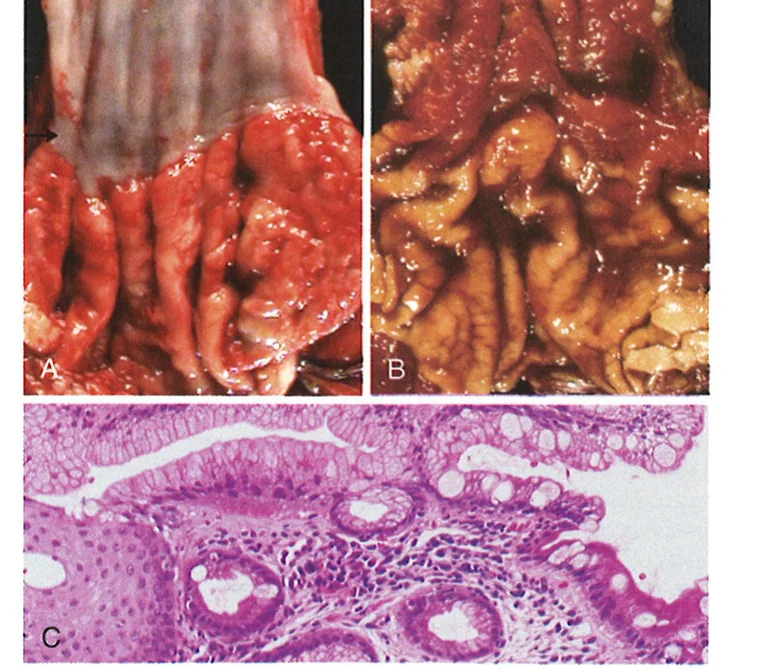
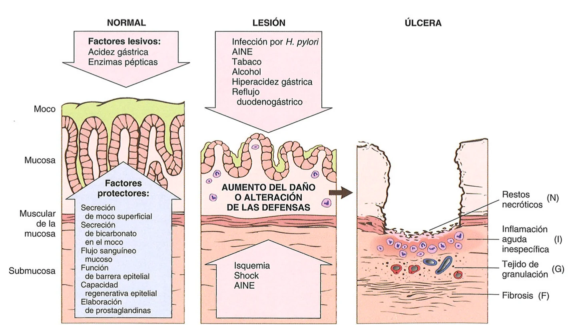
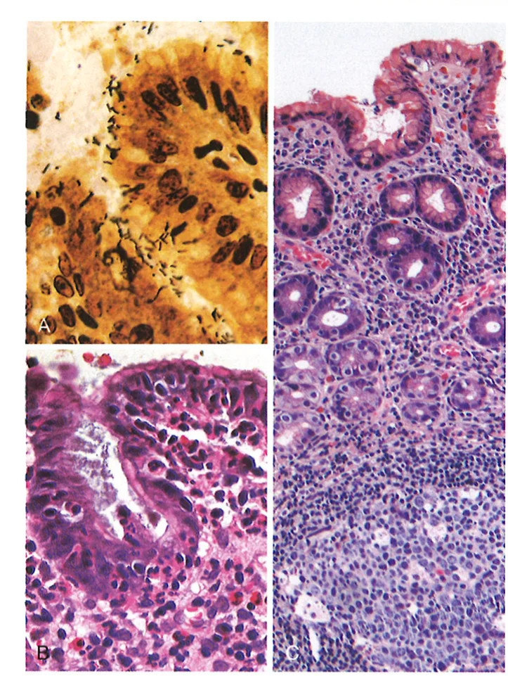
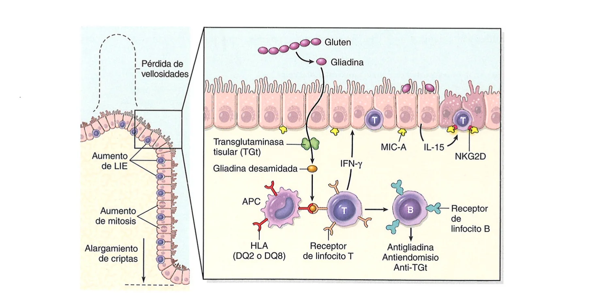
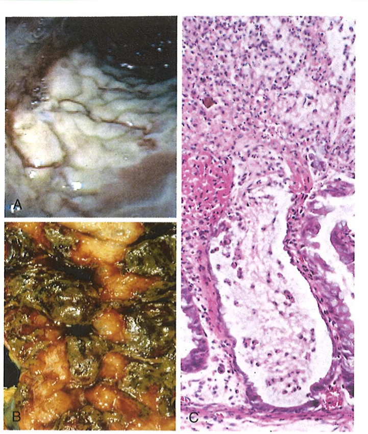
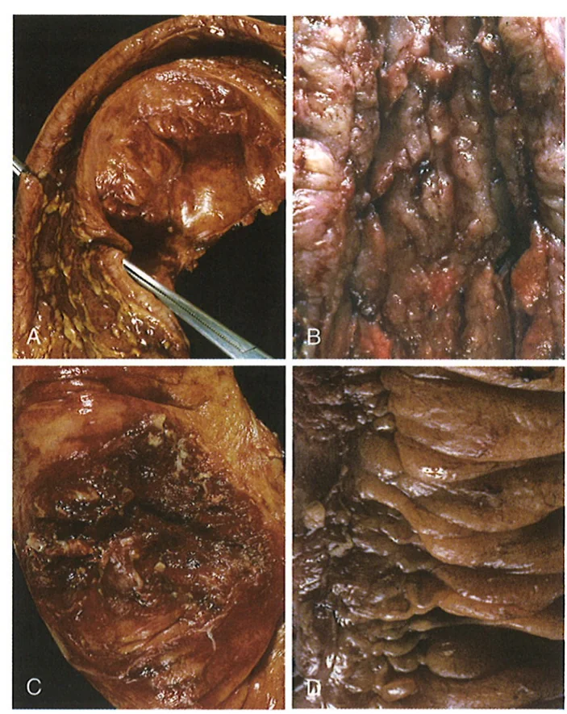
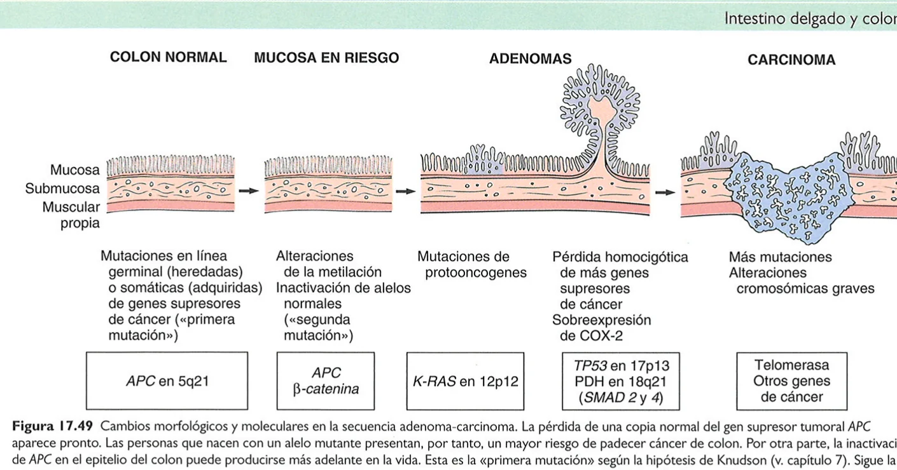

Qué cubre esta guía
Las citas p. N corresponden a la página impresa del libro. El texto se contrastó con el OCR del capítulo.
Lo esencial en 60 segundos
- Hirschsprung: aganglionosis por fallo de migración de cresta neural, siempre afecta el recto, gen RET, 10% en síndrome de Down; riesgo vital por enterocolitis y perforación p. 755-756.
- Esófago de Barrett: metaplasia intestinal con células caliciformes por ERGE crónica; de él nace la mayoría de los adenocarcinomas esofágicos (distales); TP53 y CDKN2A tempranos p. 761-762.
- Gastritis por H. pylori: antral con ácido aumentado (úlcera); la atrófica autoinmunitaria respeta el antro, da aclorhidria, anticuerpos antifactor intrínseco y anemia perniciosa p. 767-769.
- Adenocarcinoma gástrico: tipo intestinal (vía APC/Wnt) vs difuso (CDH1, anillo de sello, linitis plástica); metástasis de Virchow, hermana María José y Krukenberg p. 774-776.
- Cáncer colorrectal: secuencia adenoma-carcinoma vía APC/Wnt en ~80% de los esporádicos; vía alternativa MSI por defecto de reparación (MLH1, MSH2; síndrome de Lynch) p. 812-815.
- Mallory-Weiss (desgarro mucoso, ~10% de las HDA) no es Boerhaave (rotura transparietal que imita infarto de miocardio) p. 758.
Ideas clave
- La atresia esofágica aparece en 1-5 de cada 10.000 nacidos vivos y suele asociarse a fístula traqueoesofágica; cualquier forma provoca aspiración, asfixia, neumonía y desequilibrios hidroelectrolíticos, y obliga a buscar otras malformaciones (VACTERL) p. 754.
- El divertículo de Meckel es el divertículo verdadero y la anomalía congénita más frecuente del TD (regla de los 2); la ectopia gástrica en su interior produce úlcera péptica y hemorragia oculta p. 755.
- La estenosis hipertrófica congénita del píloro (1/300-900 nacidos vivos, 3-5× en hombres) se manifiesta entre la 3ª y 6ª semanas con vómitos no biliosos en escopetazo; la miotomía es curativa p. 755.
- La enfermedad de Hirschsprung (1/5.000 nacidos vivos) es una aganglionosis por fallo de migración de células de la cresta neural; siempre afecta al recto; mutaciones de RET explican los familiares y ~15% de los esporádicos; 10% ocurre en síndrome de Down; riesgo vital: enterocolitis, perforación y peritonitis p. 755-756.
- La acalasia (relajación incompleta del EEI + aumento de tono + aperistaltismo) primaria es por degeneración de neuronas productoras de óxido nítrico; la forma secundaria clásica es la enfermedad de Chagas por destrucción del plexo mientérico por Trypanosoma cruzi p. 757-758.
- Mallory-Weiss (desgarro mucoso, ~10% de las hemorragias digestivas altas) ≠ Boerhaave (rotura transparietal del esófago distal, grave, imita infarto de miocardio) p. 758.
- La ERGE es la causa más frecuente de esofagitis (prevalencia 10-20% en Occidente); la esofagitis eosinófila se asocia a atopia y no aumenta el riesgo de esófago de Barrett p. 759-760.
- El esófago de Barrett (metaplasia intestinal con células caliciformes) aparece hasta en 10% de las ERGE sintomáticas y 2% de la población general; la mayoría de los adenocarcinomas esofágicos nacen en él; TP53 y CDKN2A se alteran temprano p. 761-762.
- El carcinoma epidermoide esofágico se localiza en el tercio medio y se asocia a alcohol, tabaco, pobreza, acalasia, lesión cáustica y síndrome de Plummer-Vinson; supervivencia a 5 años <20% (adenoCa <25%) p. 762-764.
- La gastritis por H. pylori es la causa más frecuente de gastritis crónica: antral, con ácido normal o aumentado (riesgo de úlcera); la gastritis atrófica autoinmunitaria respeta el antro, produce aclorhidria, hipergastrinemia, anticuerpos antifactor intrínseco y anemia perniciosa p. 767-769.
- El adenocarcinoma gástrico tipo intestinal (masas voluminosas, metaplasia intestinal, vía APC/Wnt) vs tipo difuso (anillo de sello, CDH1, linitis plástica); metástasis típicas: ganglio de Virchow, nódulo de la hermana María José, tumor de Krukenberg p. 774-776.
- En colon, el adenoma es el precursor del adenocarcinoma (secuencia adenoma-carcinoma, vía APC/Wnt en ~80% de los esporádicos); la vía alternativa es la inestabilidad de microsatélites (MSI) por defecto de reparación de errores de emparejamiento (MSH2, MLH1; síndrome de Lynch) p. 812-815.
Anomalías congénitas
Atresia, fístulas y duplicaciones pueden aparecer en cualquier parte del TD; cuando afectan al esófago se descubren al nacer por regurgitación y son incompatibles con la vida sin corrección quirúrgica inmediata p. 754.
- Atresia esofágica: no se forma un segmento, queda un cordón delgado sin canalizar; se asocia a fístula traqueoesofágica; también puede existir fístula sin atresia. La forma más frecuente es el segmento superior ciego con fístula entre el segmento inferior y la tráquea p. 754.
- Asociaciones: VACTERL (vertebrales, anales, cardiacas, traqueoesofágicas, renales, de extremidades) y TACRD. El ano imperforado se debe a fallo de involución del diafragma cloacal p. 754.
- Estenosis: forma incompleta de atresia; engrosamiento fibroso de la pared. Adquirida por reflujo gastroesofágico crónico, radiación, esclerosis sistémica o lesión cáustica; clínicamente más importante en esófago e intestino delgado p. 754.
- Hernia diafragmática: desarrollo incompleto del diafragma (más frecuente a la izquierda) con herniación de vísceras al tórax; puede provocar hipoplasia pulmonar mortal p. 754.
- Onfalocele: el intestino extraembrionario no regresa; las vísceras (incluido el hígado) se hernian ventralmente cubiertas por amnios y peritoneo separados por gelatina de Wharton; asociado a otros defectos y anomalías cromosómicas p. 754.
- Gastrosquisis: afecta todas las capas de la pared abdominal, se limita al intestino y aparece como lesión aislada; incidencia en aumento, posiblemente por tabaquismo y químicos agrícolas p. 754.
Ectopia
- El sitio más frecuente de mucosa gástrica ectópica es el tercio superior del esófago (parche esofágico); el ácido puede provocar disfagia, esofagitis, esófago de Barrett o, rara vez, adenocarcinoma p. 755.
- Tejido pancreático ectópico en esófago o estómago: asintomático o con daño local; en el píloro puede obstruir; puede confundirse con carcinoma infiltrante. Heterotopia gástrica en intestino delgado o colon: hemorragia oculta por úlcera péptica contigua p. 755.
Divertículo de Meckel
- Divertículo verdadero (las tres capas de la pared) por fallo de involución del conducto vitelino; solitario, en la cara antimesentérica del íleon p. 755.
- Regla de los 2: ~2% de la población; <60 cm de la válvula ileocecal; ~5 cm; 2× en hombres; sintomático a los 2 años (solo ~4% sintomático alguna vez) p. 755.
- Puede contener ectopia pancreática o gástrica; esta segrega ácido y produce úlcera péptica con hemorragia oculta o dolor que imita apendicitis u obstrucción. Los demás divertículos son adquiridos (seudodivertículos), con predominio en el colon sigmoide p. 755.
Estenosis pilórica
- Congénita (hipertrófica): 1/300-900 nacidos vivos, 3-5× en hombres; alta concordancia en gemelos monocigóticos; mayor riesgo con síndrome de Turner y trisomía 18; asociada a eritromicina o azitromicina en las primeras 2 semanas de vida p. 755.
- Clínica: regurgitación, vómitos no biliosos en escopetazo entre la 3ª y 6ª semanas; masa abdominal dura ovoide de 1-2 cm hasta en 90%; hiperperistaltismo de izquierda a derecha; diagnóstico por ecografía; hiperplasia de la muscular propia pilórica; miotomía curativa p. 755.
- Adquirida: en adultos por gastritis antral o úlceras pépticas yuxtapilóricas; carcinomas distales de estómago y páncreas pueden estrechar el piloro por fibrosis o infiltración p. 755.
Enfermedad de Hirschsprung
Obstrucción funcional por ausencia de células ganglionares (aganglionosis) por detención de la migración de células de la cresta neural o su muerte prematura; faltan el plexo submucoso de Meissner y el mientérico de Auerbach p. 755-756.
- Genética: mutaciones de RET (mayoría de los familiares, ~15% de los esporádicos); EDNRB o EDN3; en el síndrome de Down se implica el gen de adhesión celular del cromosoma 21; penetrancia incompleta y genes modificadores (más frecuente en hombres; en mujeres el segmento aganglionar tiende a ser más largo) p. 756.
- 1/5.000 nacidos vivos; 10% en niños con síndrome de Down; lesiones neurológicas graves en 5% de los lactantes p. 755.
- Morfología: ausencia histológica de células ganglionares (también por inmunotinción para acetilcolinesterasa); el recto siempre está afectado; segmento corto (rectosigma) vs segmento largo; el colon proximal inervado se dilata (megacolon) y puede romperse cerca del ciego p. 756.
- Clínica: fallo en la eliminación de meconio posnatal, luego obstrucción con distensión abdominal y vómitos biliosos; amenazas vitales: enterocolitis, trastornos hidroelectrolíticos, perforación y peritonitis. Tratamiento: resección del segmento aganglionar y anastomosis al recto p. 756.
- Megacolon adquirido: enfermedad de Chagas (única que comparte la pérdida de células ganglionares), neoplasias, estenosis inflamatoria, colitis ulcerosa, miopatía visceral p. 756.
Esófago
Tubo muscular desde la epiglotis hasta la unión gastroesofágica; la clínica puede ser crónica e incapacitante o una molestia ocasional p. 757.
Obstrucción esofágica
Alteración de la motilidad (funcional) en tres tipos p. 757:
| Trastorno | Característica | Diagnóstico |
|---|---|---|
| Esófago en cascanueces | Contracciones intensas, de gran amplitud y descoordinadas | Manometría (el tránsito baritado puede ser normal) |
| Espasmo esofágico difuso ("en sacacorchos") | Contracciones repetidas y simultáneas del músculo distal, de amplitud normal | Tránsito baritado |
| Disfunción del esfínter esofágico inferior | Presión elevada en reposo o relajación incompleta | Manometría |
- La obstrucción mecánica (estenosis o cáncer) cursa con disfagia progresiva que comienza con sólidos; la obstrucción funcional o benigna conserva apetito y peso; las malignas cursan con adelgazamiento p. 757.
- Divertículo de Zenker: por espasmo del músculo cricofaríngeo, sobre el esfínter esofágico superior; tras los 50 años, con regurgitación y halitosis p. 757.
- Membranas esofágicas: en mujeres >40 años, asociadas a reflujo, EICH o dermatosis ampollosas; en la parte superior del esófago con anemia ferropénica, glositis y queilosis forman el síndrome de Plummer-Vinson p. 757.
- Anillos de Schatzki: circulares, gruesos, con mucosa, submucosa y a veces muscular; los anillos A están sobre la unión gastroesofágica (mucosa escamosa) y los anillos B en la unión escamocolumnar p. 757.
Acalasia
Triada: relajación incompleta del EEI, aumento de tono y aperistaltismo; disfagia, dificultad para eructar y dolor torácico; mayor riesgo de cáncer esofágico, insuficiente para justificar vigilancia p. 757.
- Primaria: degeneración de neuronas productoras de óxido nítrico; posiblemente mediada por destrucción inmunitaria (VHS-1, polimorfismos inmunorreguladores, Sjögren, tiroiditis autoinmunitaria) p. 757.
- Secundaria: Chagas (T. cruzi destruye el plexo mientérico), neuropatía autónoma diabética, tumores, amiloidosis, sarcoidosis, esclerosis sistémica; síndrome de Allgrove (triple A): acalasia, alacrimia e insuficiencia suprarrenal resistente a ACTH p. 758.
- Tratamiento: miotomía, dilatación neumática con globo, toxina botulínica p. 758.
Desgarros (Mallory-Weiss y Boerhaave)
- Mallory-Weiss: desgarros longitudinales de la mucosa cerca de la unión gastroesofágica, por arcadas o vómitos intensos (intoxicación alcohólica); hasta el 10% de las hemorragias digestivas altas; no requieren cirugía p. 758.
- Boerhaave: desgarro transparietal con rotura del esófago distal; dolor torácico intenso, taquipnea y shock, con diagnóstico diferencial de infarto de miocardio p. 758.
- Causas esofágicas de hematemesis (tabla 17.1): Mallory-Weiss, perforación (cáncer o Boerhaave), varices, fístula aortoesofágica (cáncer), esofagitis química/medicamentosa, infecciosa (Cándida, herpes), estenosis benignas, vasculitis (autoinmunitaria, CMV), esofagitis por reflujo, eosinófila, úlceras, esófago de Barrett, adenocarcinoma, carcinoma epidermoide, hernia de hiato p. 758.
Esofagitis química e infecciosa
- Irritantes: alcohol, corrosivos, líquidos calientes, tabaco; clínica desde odinofagia hasta hemorragia, estenosis o perforación; en niños por ingestión accidental de productos de limpieza, en adultos por intento de suicidio p. 758.
- Esofagitis medicamentosa: fármacos que se atascan, frecuentemente sobre estenosis; también lesión por quimioterapia, radioterapia o EICH; dermatosis descamativas (penfigoide ampolloso, epidermólisis ampollosa) y raramente Crohn p. 758.
- Infecciones: en personas sanas, la más frecuente es por virus del herpes simple; en inmunodeprimidos, VHS, CMV y hongos (candidiasis la más frecuente) p. 758.
- Morfología: candidiasis con seudomembranas blanco-grisáceas de hifas apelmazadas; VHS produce úlceras en sacabocados con inclusiones nucleares en células epiteliales multinucleadas; CMV, úlceras más superficiales con inclusiones nucleares y citoplásmicas en células endoteliales y estromales; bacterias y hongos patógenos explican ~10% de las esofagitis infecciosas p. 758-759.
- EICH esofágica: apoptosis de células epiteliales basales, atrofia mucosa y fibrosis submucosa sin infiltrado agudo importante p. 759.
Esofagitis por reflujo (ERGE)
Causa más frecuente de esofagitis y diagnóstico digestivo ambulatorio más habitual en EE. UU.; el epitelio esofágico es sensible al ácido aunque resistente a la lesión abrasiva p. 759.
- Patogenia: relajación transitoria del EEI mediada por vías vagales, desencadenada por distensión gástrica; también aumentos bruscos de la presión intraabdominal. Factores: alcohol, tabaco, obesidad, depresores del SNC, embarazo, hernia de hiato, vaciamiento gástrico retardado p. 759.
- Morfología: en la ERGE leve, solo hiperemia con histología normal; con reflujo mayor, erosiones, eosinófilos intraepiteliales, hiperplasia de la zona basal y alargamiento de las papilas; los neutrófilos son menos frecuentes y sugieren infección o daño químico p. 759.
- Prevalencia 10-20% en Occidente y <5% en Asia; más frecuente >40 años; síntomas: pirosis, disfagia y regurgitación posprandial; el dolor torácico puede confundirse con cardiopatía isquémica; tratamiento con inhibidores de la bomba de protones; la gravedad de los síntomas no correlaciona con el daño histológico p. 760.
- Hernia de hiato: tipo deslizante (la mayoría; la unión gastroesofágica se hernia al tórax) vs paraesofágica (defecto de la membrana esofagodiafragmática, requiere cirugía); sintomática en <10% de los adultos p. 760.
Esofagitis eosinófila
Inflamación aguda con predominio de eosinófilos asociada a enfermedad atópica (dermatitis atópica, rinitis alérgica, asma, eosinofilia periférica); los mastocitos también participan p. 760.
- Incidencia en aumento, sobre todo en zonas urbanas y hombres blancos; síntomas similares a ERGE más impactación alimentaria, disfagia y vómitos; en lactantes, intolerancia alimentaria p. 760.
- Endoscopia: esófago felino (anillos circulares apilados), estenosis y surcos lineales; histología: abundantes eosinófilos intraepiteliales superficiales en cúmulos y sábanas p. 760.
- Tratamiento: IBP en dosis altas, dieta de exclusión (leche de vaca, huevo, soja, legumbres, trigo), corticoesteroides tópicos; no se asocia a mayor riesgo de esófago de Barrett p. 760.
Varices esofágicas
Venas dilatadas en el esófago distal por hipertensión portal, con canales colaterales porta-cava y congestión de los plexos venosos subepitelial y submucoso p. 760.
- Habitual en cirrosis (sobre todo hepatopatía alcohólica); la esquistosomiasis hepática es la segunda causa más frecuente en el mundo p. 760.
- Varices gastroesofágicas en 30% de las cirrosis compensadas y 60% de las descompensadas; cada episodio de hemorragia conlleva mortalidad de 15-20%, y más de la mitad de los sobrevivientes recidivan en 1 año con mortalidad similar p. 760-761.
- Factores de riesgo de hemorragia: varices grandes o tortuosas, gradiente de presión venosa hepática elevado, hemorragia previa y hepatopatía avanzada; tratamiento: β-bloqueantes, ligadura endoscópica, escleroterapia, taponamiento con globo p. 761.
Esófago de Barrett
Complicación de la ERGE crónica: metaplasia intestinal en la mucosa escamosa esofágica con mayor riesgo de cáncer; hasta 10% de las ERGE sintomáticas y 2% de la población general; más frecuente en hombres blancos de 40-60 años p. 761.
- Las biopsias muestran mutaciones conductoras compartidas con el adenocarcinoma esofágico; las mutaciones oncógenas son más numerosas cuando hay displasia, asociada a síntomas prolongados, mayor longitud del segmento, mayor edad y raza blanca p. 761.
- Morfología: lengüetas de mucosa roja aterciopelada que ascienden desde la unión gastroesofágica; segmento largo (≥3 cm) y segmento corto (<3 cm), este último con menor riesgo de displasia o carcinoma p. 761.
- Diagnóstico microscópico: células caliciformes con vacuolas de moco azul pálido en forma de copa de vino; las células foveolares gástricas sin caliciformes no tienen acuerdo universal como criterio p. 762.
- Displasia leve o grave: mitosis atípicas, hipercromatismo, cromatina irregular, elevado índice nucleocitoplásmico, fallo de maduración; la grave agrega glándulas adosadas o cribiformes; la infiltración de la lámina propia define carcinoma intramucoso p. 762.
- Clínica: solo detectable por endoscopia con biopsia; la vigilancia periódica no ha demostrado mejorar la supervivencia general en ensayos aleatorizados; carcinoma intramucoso o infiltrante requiere tratamiento (resección, esofagectomía, terapia fotodinámica, ablación con láser, mucosectomía); la displasia multifocal grave se trata como carcinoma intramucoso p. 762.


Tumores esofágicos
Casi todos son adenocarcinomas o carcinomas epidermoides; el epidermoide es más frecuente en el mundo, pero el adenocarcinoma aumenta en EE. UU. y países occidentales; los tumores benignos más frecuentes son los leiomiomas p. 762.
Adenocarcinoma
- Nace en el contexto de esófago de Barrett y ERGE de larga duración; otros factores: tabaco y radiación; riesgo reducido con frutas y verduras frescas; algunos serotipos de H. pylori se asocian a menor riesgo (atrofia gástrica → menos ácido → menos daño por reflujo) p. 762.
- Epidemiología: 7× más frecuente en hombres de raza blanca; incidencia máxima en EE. UU., Reino Unido, Canadá, Australia, Países Bajos y Brasil; antes de 1970 era <5% de los cánceres esofágicos, hoy más de la mitad en EE. UU. p. 762.
- Patogenia: progresión prolongada con TP53 y CDKN2A (pérdida alélica o silenciamiento por hipermetilación; codifica p16 y p19-ARF) tempranos y, después, amplificación de EGFR, ERBB2, MET, ciclina D1 y ciclina E p. 762.
- Morfología: tercio distal, a menudo invade el cardias gástrico; masas de 5 cm o más, o infiltrantes/ulceradas; produce mucina y forma glándulas de tipo intestinal; variantes: células en anillo de sello o células pequeñas poco diferenciadas p. 763.
- Clínica: dolor o dificultad para tragar, adelgazamiento, hematemesis, dolor torácico o vómitos; al presentarse suele haber diseminación a vasos linfáticos submucosos; supervivencia a 5 años <25%, pero ~80% si está limitado a mucosa o submucosa p. 763.
Carcinoma epidermoide
- Factores de riesgo: >45 años, hombres 4× (casi 8× en afroamericanos); alcohol y tabaco (sinérgicos), pobreza, lesión cáustica, acalasia, síndrome de Plummer-Vinson, dietas pobres en frutas/verduras, bebidas muy calientes; radiación mediastínica previa (5-10 años o más después) p. 763.
- Incidencia máxima: Irán, centro de China, Hong Kong, Brasil y Sudáfrica; en el oeste de Kenia se relaciona con la leche fermentada mursik, que contiene acetaldehído p. 763.
- Patogenia: contribución posible del VPH en regiones de alto riesgo; anomalías repetidas: amplificación de SOX2, sobreexpresión de ciclina D1, mutaciones con pérdida de función en TP53, CDH1 y NOTCH1 p. 764.
- Morfología: la mitad en el tercio medio; comienza como displasia escamosa (carcinoma in situ); luego placas blanco-grisáceas, masas polipoideas/exofíticas, ulceradas o infiltrantes; puede invadir árbol respiratorio (neumonía), aorta (hemorragia catastrófica) o mediastino/pericardio; de moderada a bien diferenciado; nódulos satélite intraparietales a varios centímetros p. 764.
- Metástasis ganglionares según el tercio: superior → cervicales; medio → mediastínicos, paratraqueales y traqueobronquiales; inferior → gástricos y celiacos p. 764.
- Clínica: aparición lenta; el paciente se adapta cambiando de sólidos a líquidos; puede haber fístula traqueoesofágica con aspiración como primer síntoma; supervivencia a 5 años 75% en lesiones superficiales, <20% global en EE. UU. p. 764.
Estómago
Cuatro regiones: cardias, fondo, cuerpo y antro; cardias y antro con células foveolares secretoras de mucina; el antro además tiene células G productoras de gastrina que estimulan a las células parietales del fondo y cuerpo p. 764-765.
Gastropatía y gastritis aguda
La gastritis aguda se define por presencia de neutrófilos; la gastropatía cuando las células inflamatorias son infrecuentes o ausentes; causas más habituales de gastropatía: AINE, alcohol y bilis p. 765.
- Defensas de la mucosa: moco y fosfolípidos foveolares, capa de líquido "sin mezclar" con bicarbonato, barrera epitelial, renovación de las células foveolares cada 3-7 días, flujo sanguíneo mucoso p. 765.
- AINE: inhiben la COX y reducen las prostaglandinas E e I, que sostienen la secreción de moco, bicarbonato y fosfolípidos, el flujo sanguíneo y la reposición epitelial; la COX-1 pesa más, pero también los inhibidores selectivos de COX-2 (celecoxib) provocan gastropatía p. 765.
- Otros: los iones amonio (ureasa de H. pylori, uremia) inhiben los transportadores de bicarbonato; hipoxia en grandes alturas; agentes cáusticos; alcohol, radioterapia y quimioterapia dañan directamente el epitelio p. 765-766.
- Morfología: edema y congestión de la lámina propia, hiperplasia de células foveolares; la presencia de neutrófilos sobre la membrana basal indica gastritis (inflamación activa), no gastropatía; erosión + hemorragia = gastritis hemorrágica erosiva aguda. El término "agudo" en el TD se refiere a la duración, no al patrón inflamatorio p. 766.


Enfermedad de la mucosa relacionada con el estrés
Úlceras agudas por sobrecarga fisiológica: traumatismos graves, quemaduras extensas, enfermedad intracraneal, cirugía mayor, enfermedad crítica p. 766.
- Nombres: úlceras de Curling (duodeno proximal, quemaduras o traumatismos), úlceras de Cushing (gástricas, duodenales y esofágicas de enfermedad intracraneal, con alto riesgo de perforación) p. 766.
- Patogenia: isquemia local (hipotensión, vasoconstricción visceral, endotelina 1), estimulación vagal directa con hipersecreción ácida en lesiones intracraneales, acidosis generalizada p. 766.
- Morfología: úlceras redondeadas <1 cm, de base pardo-negra por digestión ácida de sangre extravasada; múltiples y en cualquier parte del estómago (a diferencia de las pépticas, solitarias y antrales); sin cicatriz ni engrosamiento vascular; curan con reepitelización completa al corregir la causa p. 766.
- Clínica: hemorragia que exige transfusión en 1-4% de los pacientes críticos; profilaxis con inhibidores de la bomba de protones; el pronóstico depende de corregir la enfermedad de base p. 766.
- Otras causas de hemorragia gástrica no por estrés: lesión de Dieulafoy (arteriola submucosa anómala en la curvatura menor cerca de la unión gastroesofágica, hemorragia recidivante abundante) y ectasia vascular antral gástrica (EVAG, "estómago en sandía"): 4% de las hemorragias digestivas altas no varicosas, capilares dilatados con trombos de fibrina, asociada a cirrosis y esclerosis sistémica, con anemia ferropénica p. 766.
Gastritis crónica
Causas: H. pylori (la más frecuente), gastritis autoinmunitaria, radiación, reflujo biliar crónico, lesión mecánica (sonda nasogástrica), enfermedad de Crohn, amiloidosis, EICH. Síntomas menos graves pero más persistentes que la aguda; la hematemesis es poco frecuente p. 766-767.
Gastritis por Helicobacter pylori
Bacilos helicoidales presentes en casi todos los pacientes con úlcera duodenal y en la mayoría con úlcera gástrica o gastritis crónica; la infección aguda suele ser asintomática p. 767.
- Epidemiología: asociada a pobreza, hacinamiento, bajo nivel educacional, residencia rural, nacimiento fuera de EE. UU. y edad >60 años; transmisión fecal-oral, adquirida en la infancia y persistente sin tratamiento; en países ricos, rara antes de los 10 años, 10% entre 18-30 años y hasta 50% sobre 65 años p. 767.
- Patogenia: gastritis predominantemente antral con ácido normal o aumentado → mayor riesgo de úlcera péptica gástrica o duodenal; si evoluciona a pangastritis con atrofia, cae la secreción ácida y protege de las úlceras pero aumenta el riesgo de adenocarcinoma (relación inversa entre adenocarcinoma gástrico y úlcera duodenal) p. 767.
- Virulencia: flagelos, ureasa (amoniaco a partir de urea, sube el pH local), adhesinas y toxinas, en particular el gen CagA: presente en 50% de los aislados generales pero 90% en poblaciones con alta prevalencia de cáncer gástrico p. 767.
- Factores del huésped: polimorfismos que aumentan TNF e IL-1β o reducen IL-10 se asocian a pangastritis, atrofia, metaplasia intestinal y cáncer gástrico p. 767.
- Morfología: bacilos en el moco superficial (mejor con inmunotinciones o Warthin-Starry); el antro es el sitio de biopsia preferido; células plasmáticas en sábanas, linfocitos, macrófagos y neutrófilos intraepiteliales con abscesos cripticos; agregados linfoides con centros germinales (MALT) con riesgo de transformarse en linfoma p. 767-768.
- Diagnóstico incruento: serología, antígeno fecal y prueba del aliento con urea; en biopsia: prueba rápida de ureasa, cultivo o PCR. Tratamiento: antibióticos + inhibidores de la bomba de protones; recaídas por erradicación incompleta o reinfección p. 768.


Gastritis atrófica autoinmunitaria
Menos del 10% de las gastritis crónicas; prevalencia 2% en mayores de 60 años; respeta el antro y cursa con hipergastrinemia marcada p. 768.
- Características: anticuerpos contra células parietales y factor intrínseco; disminución del pepsinógeno I sérico; hiperplasia de células endocrinas; deficiencia de vitamina B12; aclorhidria p. 768.
- Patogenia: linfocitos T CD4+ contra la H+/K+-ATPasa (bomba de protones) son los principales efectores; la pérdida de factor intrínseco produce malabsorción ileal de vitamina B12 y anemia perniciosa; los autoanticuerpos (hasta en 80%) no son patógenos p. 768-769.
- Morfología: daño difuso de la mucosa oxíntica de fondo y cuerpo con antro y cardias respetados; inflamación profunda, centrada en las glándulas (a diferencia de la superficial de H. pylori); metaplasia intestinal con células caliciformes; hiperplasia de células endocrinas que rara vez forma tumores neuroendocrinos (carcinoides) pequeños y multicéntricos p. 769.
- Clínica: los anticuerpos aparecen 2-3 décadas antes de la atrofia; mediana de edad 60 años, leve predominio femenino; asociada a tiroiditis de Hashimoto, diabetes mellitus tipo 1 y enfermedad de Addison; manifestaciones por deficiencia de B12: anemia megaloblástica, glositis atrófica, diarrea por malabsorción, degeneración combinada subaguda de la médula espinal p. 769.
Comparación (tabla 17.2) , Fuente: p. 768
| Característica | Asociada a H. pylori | Autoinmunitaria |
|---|---|---|
| Lugar | Antro | Cuerpo |
| Infiltrado inflamatorio | Neutrófilos, células plasmáticas subepiteliales | Linfocitos, macrófagos |
| Producción de ácido | Aumentada o ligeramente disminuida | Disminuida |
| Secreción de gastrina | Aumentada a notablemente aumentada | Normal a aumentada |
| Otras lesiones | Pólipos hiperplásicos/inflamatorios | Hiperplasia neuroendocrina |
| Serología | Anticuerpos contra H. pylori | Anticuerpos contra células parietales (H+/K+-ATPasa, factor intrínseco) |
| Secuelas | Úlcera péptica, atrofia, adenocarcinoma, MALToma | Anemia perniciosa, adenocarcinoma, tumor carcinoide |
| Asociaciones | Bajo nivel socioeconómico, pobreza, áreas rurales | Enfermedad autoinmunitaria: tiroiditis, diabetes mellitus, enfermedad de Graves |
Formas poco frecuentes de gastritis
- Eosinófila: infiltrados densos de eosinófilos en mucosa y muscular, habitualmente antral o pilórica; eosinofilia periférica e IgE elevada; alérgenos típicos en niños: leche de vaca y proteína de soja; también con esclerosis sistémica, miopatía inflamatoria, parasitosis e incluso H. pylori p. 769.
- Linfocítica: mujeres, síntomas inespecíficos; ~40% asociada a enfermedad celiaca; gastritis varioliforme endoscópicamente (pliegues engrosados con nódulos y úlcera aftosa central); aumento de linfocitos T intraepiteliales p. 769.
- Granulomatosa: término descriptivo; en poblaciones occidentales la causa específica más frecuente es la afectación gástrica por enfermedad de Crohn, seguida de sarcoidosis e infecciones (micobacterias, hongos, CMV, H. pylori); puede estrechar y rigidizar el antro p. 769-770.
Enfermedad ulcerosa péptica (EUP)
Úlcera crónica de la mucosa de duodeno o estómago, casi siempre asociada a H. pylori, AINE o tabaquismo p. 770.
- Más frecuente en antro gástrico o duodeno por la gastritis antral de H. pylori con mayor secreción de ácido y menor bicarbonato duodenal; la atrofia oxíntica (pangastritis) protege de las úlceras antrales y duodenales; la mucosa gástrica ectópica (duodeno, divertículo de Meckel, parche esofágico) también puede producir EUP p. 770.
- Factores de riesgo (tabla 17.3): H. pylori, tabaquismo (sinérgico con H. pylori en la EUP gástrica), EPOC, cocaína, AINE (potenciados por corticoesteroides), cirrosis alcohólica (sobre todo EUP duodenal), estrés psicológico, hiperplasia de células endocrinas, síndrome de Zollinger-Ellison, infección vírica (CMV, VHS). Fuente: p. 770
- Morfología: duodeno proximal, a pocos centímetros de la válvula pilórica; en el estómago, curvatura menor cerca del límite cuerpo-antro; solitarias en más del 80%, redondeadas u ovales, en sacabocados, con márgenes al nivel de la mucosa (los márgenes sobreelevados son de los cánceres); base lisa y limpia con tejido de granulación y vasos engrosados y trombosados que pueden sangrar de forma mortal; cicatrices con pliegues irradiados p. 770-771.
- Clínica: ardor o dolor epigástrico de 1-3 h después de las comidas, empeora por la noche (23:00-02:00) y se alivia con álcalis o alimentos; en úlceras penetrantes, dolor referido a espalda, hipocondrio izquierdo o tórax (puede malinterpretarse como cardiaco). Tratamiento: erradicación de H. pylori + inhibidores de la bomba de protones; recidiva <20% tras erradicación satisfactoria p. 771.
- Complicaciones (tabla 17.4) , Fuente: p. 770-771 | Complicación | Datos clave | |---|---| | Hemorragia | 15-20% de los pacientes; complicación más frecuente; 25% de las muertes por úlcera; puede ser el primer signo | | Perforación | Hasta 5%; dos tercios de las muertes por úlcera; rara vez primer signo; aire libre bajo el diafragma en radiografía vertical | | Obstrucción | ~2%; por edema o cicatrización; más frecuente en úlceras del conducto pilórico; dolor cólico y vómitos incoercibles |
Otras complicaciones de la gastritis crónica
- Atrofia mucosa y metaplasia intestinal: la pérdida de células parietales con metaplasia intestinal (células caliciformes) se asocia claramente a adenocarcinoma gástrico; el riesgo es mayor en la gastritis atrófica metaplásica autoinmunitaria (aclorhidria → sobrecrecimiento bacteriano productor de nitrosaminas); la metaplasia de la gastritis por H. pylori puede remitir tras la erradicación p. 771.
- Displasia: lesión preinvasora por daño de radicales libres y estímulos proliferativos (la gastrina es mitógeno epitelial gástrico); las células reactivas maduran hacia la superficie y las displásicas permanecen inmaduras p. 771.
- Gastritis quística: proliferación reactiva con quistes epiteliales atrapados en submucosa o pared profunda, por traumatismos; puede confundirse con adenocarcinoma infiltrante p. 771.
Gastropatías hipertróficas
Engrosamiento "cerebriforme" enorme de los pliegues por hiperplasia epitelial sin inflamación, por exceso de factores de crecimiento p. 771.
Enfermedad de Ménétrier
Poco frecuente; secreción excesiva de TGF-α (ligando del EGFR); algunos casos siguen a infección vírica o por H. pylori p. 771-772.
- Morfología: hiperplasia difusa del epitelio foveolar de fondo y cuerpo (el antro se respeta) con glándulas alargadas en sacacorchos y dilatación quística; hipoplasia de células parietales y principales; inflamación moderada p. 772.
- Clínica: hipoproteinemia por pérdida de albúmina que puede acercarse a 10 g/día, adelgazamiento, diarrea y edema periférico; efectos de TGF-α (hiperplasia de hígado, páncreas y TD; pérdida de tejido muscular y adiposo; psoriasis); en niños suele ser autolimitada y postinfecciosa (CMV); riesgo aumentado de adenocarcinoma gástrico en adultos p. 772.
- Tratamiento: soporte con albúmina y nutrición parenteral; tratar la infección subyacente si existe; anticuerpos anti-EGFR eficaces en muchos casos; gastrectomía en casos graves p. 772.
Síndrome de Zollinger-Ellison
Gastrinomas casi siempre en intestino delgado o páncreas; úlceras duodenales o diarrea crónica; grosor acusado de la mucosa oxíntica por hiperplasia de células parietales p. 773.
- 75% esporádicos y solitarios; 25% asociados a MEN-1: pacientes más jóvenes, tumores duodenales con frecuencia metastatizantes; mutaciones de MEN1 en gastrinomas esporádicos también se asocian a comportamiento invasivo p. 773.
- Tratamiento: bloqueo de la hipersecreción con inhibidores de la bomba de protones; análogos de la somatostatina en enfermedad metastásica; gammagrafía con receptores de somatostatina o ecoendoscopia para detectarlos p. 773.
Comparación de proliferaciones gástricas (tabla 17.5) , Fuente: p. 772
| Parámetro | Enf. de Ménétrier (adulto) | Síndrome de Zollinger-Ellison | Pólipos de glándulas fúndicas | Pólipos inflamatorios e hiperplásicos | Adenomas | Gastritis quística |
|---|---|---|---|---|---|---|
| Edad media (años) | 30-60 | 50 | 50-60 | 50-60 | 50-60 | Variable |
| Lugar | Fondo y cuerpo | Antro > cuerpo | Fondo | Cuerpo y fondo | Antro > cuerpo | Cuerpo y fondo |
| Célula predominante | Mucoso | Parietal > mucoso, endocrino | Parietal y principal | Mucoso | Displásico, intestinal | Mucoso, revestimiento de quiste |
| Síntomas | Hipoproteinemia, adelgazamiento, diarrea | Similares a úlcera péptica | Ninguno, náuseas | Similares a gastritis crónica | Similares a gastritis crónica | Similares a la gastritis crónica |
| Asociación con adenocarcinoma | No | No | Ocasional | No | Frecuente | No |
Pólipos y tumores gástricos
Los pólipos se detectan hasta en 5% de las endoscopias altas; pueden ser por hiperplasia, inflamación, ectopia o neoplasia p. 773.
Pólipos inflamatorios e hiperplásicos
Hasta 75% de todos los pólipos gástricos; su incidencia se correlaciona con la prevalencia regional de H. pylori; personas de 50-60 años con gastritis crónica; el riesgo de displasia varía de 1 a 20% y aumenta en pólipos pediculados >1 cm; la mayoría <1 cm, frecuentemente múltiples (sobre todo en gastritis atrófica), con glándulas foveolares irregulares, dilatadas en forma quística y elongadas, y lámina propia edematosa p. 773-774.
Pólipos de las glándulas fúndicas
En cuerpo y fondo; lesiones bien delimitadas de superficie lisa con glándulas dilatadas en forma quística revestidas por células parietales, principales y foveolares, sin inflamación p. 773-774.
- Esporádicos (aumentados por inhibidores de la bomba de protones → más gastrina → crecimiento de glándulas oxínticas) y en la poliposis adenomatosa familiar (APC) y poliposis asociada a MUTYH; en los sindrómicos puede haber displasia y cánceres infrecuentes; los esporádicos no conllevan riesgo neoplásico importante p. 773-774.
Adenoma gástrico
Hasta 10% de los pólipos gástricos; en contexto de gastritis crónica con atrofia y metaplasia intestinal (excepción: mutaciones germinales de APC o MUTYH); 50-60 años, hombres 3× p. 774.
- El riesgo de cáncer dentro del adenoma se correlaciona con el tamaño, especialmente >2 cm (hasta 30%); exigen tratamiento más intensivo que los adenomas de colon. Solitarios, antrales; displasia leve o grave (hipercromatismo, alargamiento y seudoestratificación nuclear; la grave añade gemación glandular y estructuras adosadas o cribiformes) p. 774.
Adenocarcinoma gástrico
Neoplasia maligna más frecuente del estómago (>90% de los cánceres gástricos); los primeros síntomas imitan la gastritis crónica y la EUP, por lo que suelen diagnosticarse avanzados p. 774.
- Epidemiología: incidencia hasta 20 veces mayor en Japón, Chile, Costa Rica y Europa del Este que en América del Norte, norte de Europa, África y sudeste asiático; en Japón, el 35% de los casos detectados son precoces (mucosa/submucosa); en América del Norte y norte de Europa, <20% p. 774.
- Metástasis típicas al diagnóstico: ganglio supraclavicular (de Virchow), ganglios periumbilicales (nódulo de la hermana María José), ovarios (tumor de Krukenberg), ganglio axilar izquierdo y fondo de saco de Douglas p. 774.
- La incidencia cayó 85% desde 1930 en EE. UU. (hoy 2,5% de las muertes por cáncer), atribuida sobre todo a la menor prevalencia de H. pylori y a menos N-nitrosos y benzo[a]pireno (menos sal y ahumados) más refrigeración; los migrantes mantienen el riesgo del país de origen, sus hijos no; en cambio, el cáncer del cardias está aumentando, vinculado a esófago de Barrett, ERGE crónica y obesidad p. 775.
- Patogenia: cáncer gástrico familiar por mutaciones germinales con pérdida de función de CDH1 (cadherina E); en los difusos esporádicos, CDH1 mutada en ~50% y silenciada por hipermetilación en el resto; la pérdida de cadherina E es el paso clave del tipo difuso (también mutada en el carcinoma lobulillar de mama) p. 775.
- El tipo intestinal se asocia a la vía Wnt: pérdida de función de APC, ganancia de función de β-catenina; además TGFβRII, BAX, CDKN2A; los pacientes con PAF tienen mayor riesgo de cáncer gástrico intestinal, sobre todo en áreas de alto riesgo como Japón; polimorfismos proinflamatorios (receptores de IL-1β) aumentan el riesgo en gastritis por H. pylori p. 775.
- Morfología: la mayoría distal, en el antro, curvatura menor > mayor; tipo intestinal: masas exofíticas o ulceradas con glándulas y vacuolas apicales de mucina; tipo difuso: células en anillo de sello (vacuola de mucina con núcleo falciforme periférico) que infiltran en grupos e individualmente, sin formar glándulas, con lagos de mucina; difuso con pared engrosada y pliegues aplanados: linitis plástica ("botella de cuero") p. 775-776.
- Clínica: tipo intestinal predomina en áreas de alto riesgo, desde lesiones precursoras (displasia plana y adenomas), edad promedio 55 años, hombres:mujeres 2:1; tipo difuso de distribución uniforme, sin lesión precursora, sin predominio de sexo; la disminución de la incidencia aplica solo al tipo intestinal; pronóstico: profundidad de la invasión y metástasis; con resección curativa, supervivencia a 5 años hasta 90% incluso con metástasis ganglionares; avanzado <20%; global en EE. UU. <30% p. 776.
Linfoma (MALToma)
Los linfomas extraganglionares son más frecuentes en el TD, especialmente el estómago; casi el 5% de las neoplasias malignas gástricas son linfomas primarios, la mayoría linfomas B de la zona marginal extraganglionares de bajo grado (MALTomas) p. 776.
- Patogenia: surgen en focos de inflamación crónica; no existe MALT en el estómago normal, se induce por gastritis crónica; H. pylori es el inductor más frecuente p. 776.
- Tres translocaciones activan constitutivamente NF-κB: t(11;18)(q21;q21) (fusión API2-MALT1), t(14;18)(q32;q21) y t(1;14)(p22;q32) (aumento de MALT1 y BCL-10); los tumores con estas translocaciones no responden a la erradicación de H. pylori, mientras que los que dependen de la activación dependiente de antígeno sí; también resisten a la erradicación los tumores que infiltran la muscular propia o con afectación ganglionar p. 776-777.
- Morfología: infiltrado linfocítico denso en la lámina propia con lesiones linfoepiteliales diagnósticas (linfocitos neoplásicos que rodean e infiltran las glándulas); diferenciación plasmocítica en ~40%; expresan CD19 y CD20, no CD5 ni CD10, CD43 en ~25%; monoclonalidad por cadenas ligeras κ o λ o reordenamientos de IgH; pueden transformarse en linfoma B difuso de células grandes (inactivación de TP53 y CDKN2A) p. 777.
- Clínica: dispepsia y dolor epigástrico; también hematemesis, melenas y adelgazamiento; diagnóstico difícil frente a la gastritis por H. pylori en biopsias pequeñas p. 777.
Neoplasias neuroendocrinas
Antes llamadas "carcinoides", hoy tumores neuroendocrinos bien diferenciados; más del 40% aparecen en el intestino delgado; el árbol traqueobronquial es el siguiente sitio p. 777.
- Asociaciones gástricas: hiperplasia de células endocrinas, gastritis atrófica autoinmunitaria, MEN-1 y síndrome de Zollinger-Ellison; la hiperplasia por inhibidores de la bomba de protones no tiene riesgo significativo de progresión p. 777.
- Morfología: masas intraparietales o submucosas polipoideas, amarillas o pardas, duras por desmoplasia (que puede acodar y obstruir el intestino delgado); células uniformes con cromatina en "sal y pimienta"; sinaptofisina y cromogranina A positivas; los poco diferenciados (carcinomas neuroendocrinos de células pequeñas o grandes) tienen altas tasas mitóticas y Ki-67, con mutaciones de TP53 y RB p. 777-778.
- Síndrome carcinoide: <10% de los pacientes; requiere que las sustancias vasoactivas eludan el metabolismo hepático de primer paso (carga tumoral grande o secreción fuera de la vena portal); enrojecimiento cutáneo, sudación, broncoespasmo, dolor cólico, diarrea y fibrosis valvular cardiaca derecha p. 778.
- Pronóstico por localización: estómago/duodeno rara vez metastatizan y se curan con resección (especialmente sobre gastritis atrófica); los gástricos sin factores predisponentes son más malignos; yeyuno-íleon: múltiples y malignos; apéndice y recto: incidentales, los apendiculares casi siempre benignos y los rectales rara vez metastatizan p. 778.
Tumor del estroma gastrointestinal (GIST)
Tumor mesenquimatoso más frecuente del abdomen (11-20 por millón/año); más de la mitad en el estómago; se origina en las células intersticiales de Cajal (marcapasos) p. 778.
- Patogenia: ~75% con mutaciones activadoras de KIT y ~8% de PDGFRA (mutuamente excluyentes, activan las mismas vías); los GIST sin ellas a menudo tienen mutaciones de los genes de la succinato deshidrogenasa (SDHA-B-C-D), heredadas en línea germinal con riesgo de GIST y paraganglioma (síndrome de Carney-Stratakis); en niños, triada de Carney (GIST, paraganglioma y condroma pulmonar, no hereditaria, en mujeres); mayor incidencia en neurofibromatosis tipo 1 p. 778-779.
- Morfología: hasta 30 cm, masa carnosa solitaria bien delimitada con mucosa ulcerada; tipo fusocelular o epitelioide (puede simular adenocarcinoma metastásico); marcador diagnóstico más útil: KIT (CD117), positivo en 95% de los GIST gástricos p. 779.
- Clínica: efectos compresivos; úlcera con hemorragia; anemia en ~mitad; pronóstico por tamaño, índice mitótico y localización; los gástricos son menos agresivos que los del intestino delgado; recidiva/metástasis infrecuente si <5 cm, habitual si >10 cm activos mitóticamente; los KIT/PDGFRA mutados responden a imatinib; la resistencia surge por mutaciones secundarias y puede responder a otros inhibidores de tirosina cinasa p. 779.
Intestino delgado y colon
La mayor parte del TD; sitio de malabsorción y diarrea, de la interacción inmunitaria con antígenos alimentarios y microbianos, y el origen más frecuente de neoplasias digestivas en poblaciones occidentales p. 780.
Obstrucción intestinal
El intestino delgado es el más afectado por su luz estrecha; hernias, adherencias, invaginación intestinal y vólvulo suman el 80% de las obstrucciones mecánicas; el resto: tumores, infarto, estenosis (p. ej., Crohn). Clínica: dolor y distensión abdominal, vómitos y estreñimiento p. 780.
- Hernias: protrusión de una bolsa de peritoneo por debilidad de la pared abdominal (conductos inguinal y femoral, ombligo, sitios quirúrgicos); hasta en 5% de la población; causa más frecuente de obstrucción intestinal en el mundo y tercera en EE. UU.; secuencia: presión en el cuello del saco → estasis venosa y edema → encarcelamiento → estrangulamiento e infarto p. 780.
- Adherencias: por cirugía, infección o inflamación peritoneal (p. ej., endometriosis); puentes fibrosos que crean asas cerradas (hernia interna); secuelas similares a las hernias externas p. 780-781.
- Vólvulo: retorsión de un asa alrededor de su inserción mesentérica: obstrucción más infarto; más frecuente en grandes asas redundantes del colon sigmoide, seguido de ciego, intestino delgado, estómago o colon transverso; infrecuente, se pasa por alto con resultados graves p. 781.
- Invaginación intestinal: un segmento se pliega en el inmediatamente distal y el peristaltismo lo impulsa tirando del mesenterio → obstrucción, compresión vascular e infarto; causa más frecuente de obstrucción intestinal en niños <2 años; casos idiopáticos en niños sanos; otros asociados a infección vírica y vacunas contra el rotavirus (hiperplasia de placas de Peyer como frente de avance); en niños mayores y adultos, por una masa intraluminal que tracciona; ~1% de los pacientes con fibrosis quística; los enemas opacos o de aire pueden ser diagnósticos y terapéuticos en lactantes; con masa, cirugía p. 781.
Enfermedad isquémica intestinal
Irrigación por las arterias celiaca, mesentérica superior e inferior; la pérdida lenta y progresiva se tolera por las arcadas y colaterales, pero la insuficiencia aguda de un vaso principal puede infartar varios metros de intestino; el daño va de infarto mucoso a parietal o transparietal p. 781.
- Causas de obstrucción aguda: trombosis o embolia; el factor de riesgo más importante es la ateroesclerosis grave en el origen de los vasos mesentéricos; émbolos desde ateromas aórticos o trombos cardiacos; trombosis venosa mesentérica por hipercoagulabilidad, neoplasias invasivas, cirrosis, traumatismos o masas que comprimen el drenaje portal; hipoperfusión sin oclusión por insuficiencia cardiaca, shock, deshidratación o vasoconstrictores p. 781.
- Patogenia en dos fases: lesión hipóxica inicial y lesión por reperfusión (fuga de lipopolisacáridos, radicales libres, neutrófilos y mediadores) p. 781.
- Zonas de penumbra (marginales): el ángulo esplénico (fin de las mesentéricas superior e inferior) y, en menor grado, colon sigmoide y recto; el epitelio de superficie es más vulnerable que las criptas, cuyas células madre quedan protegidas → atrofia del epitelio superficial con criptas normales o hiperproliferativas es la firma morfológica p. 781.
- Morfología: el colon es el sitio más habitual; lesiones segmentarias; mucosa hemorrágica y ulcerada; en el infarto transparietal, transición neta entre intestino normal e isquémico, color rojo oscuro a púrpura, y necrosis coagulativa de la muscular propia en 1-4 días con posible perforación; en la trombosis venosa la transición es menos brusca; seudomembranas por sobreinfección bacteriana pueden imitar la colitis por C. difficile p. 782.
- Clínica: más frecuente >70 años y en mujeres; isquemia aguda del colon con dolor cólico súbito en la fosa ilíaca izquierda, deseo de defecar y sangre o diarrea hemorrágica; cirugía en ~10% de los casos; mortalidad a 30 días ~10%, que se duplica si el colon ascendente está afectado (arteria mesentérica superior, compromiso más generalizado); mal pronóstico con EPOC y síntomas >2 semanas p. 782.
- Formas subagudas y crónicas: la isquemia crónica puede confundirse con enfermedad inflamatoria intestinal; el CMV produce isquemia por tropismo endotelial; la enterocolitis por radiación combina lesión epitelial y endotelial con fibroblastos de radiación muy atípicos; la enterocolitis necrosante del recién nacido (sobre todo prematuro) tiene contribución isquémica p. 782-783.
Angiodisplasia
Malformación de vasos submucosos y mucosos dilatados de paredes delgadas; más frecuente en ciego y colon ascendente, tras la sexta década; prevalencia <1% en adultos, pero causa el 20% de los episodios graves de hemorragia intestinal baja en poblaciones mayores p. 783.
- Patogenia propuesta: oclusión intermitente de las venas submucosas que atraviesan la muscular propia; el ciego tiene el mayor diámetro y mayor tensión parietal, lo que explicaría su distribución preferente. Morfología: nidos ectásicos de venas, vénulas y capilares tortuosos separados de la luz solo por la pared vascular y epitelio adelgazado, vulnerables a rotura por lesiones mínimas p. 783.
Malabsorción y diarrea
La malabsorción es la absorción defectuosa de grasas, vitaminas, proteínas, hidratos de carbono, electrolitos, minerales y agua; rasgo distintivo: esteatorrea (heces voluminosas, espumosas, grasientas, amarillas o de color arcilla); en EE. UU. las causas crónicas más frecuentes son la insuficiencia pancreática, la enfermedad celiaca y la enfermedad de Crohn p. 783.
- Cuatro fases de la absorción: digestión intraluminal, digestión terminal (disacaridasas y peptidasas del borde en cepillo), transporte transepitelial y transporte linfático de lípidos; los síndromes de malabsorción se parecen más entre sí de lo que difieren p. 783.
- Consecuencias: diarrea, meteorismo, dolor abdominal, adelgazamiento y atrofia muscular; anemia y mucositis por déficit de piridoxina, folato o vitamina B12; hemorragia por déficit de vitamina K; osteopenia y tetania por déficit de calcio, magnesio o vitamina D; neuropatía periférica por déficit de vitaminas A o B1 p. 783.
- Diarrea: aumento de masa, frecuencia o fluidez de las heces, normalmente >200 g/día; en casos graves hasta 14 L/día; disentería = diarrea dolorosa, hemorrágica y de pequeño volumen. Tipos: secretora (isotónica, persiste en ayuno), osmótica (líquido >50 mOsm más concentrado que el plasma, cede con el ayuno; p. ej., deficiencia de lactasa), por malabsorción (con esteatorrea, se alivia con el ayuno) y exudativa (inflamatoria, heces purulentas, a menudo hemorrágicas, persiste en ayuno) p. 784.
- Fibrosis quística: defecto de CFTR en el transporte de cloruro y bicarbonato → contenido luminal mal hidratado → cálculos intraductales pancreáticos, pancreatitis crónica e insuficiencia pancreática exocrina en más del 80% de los pacientes, con fallo de la digestión intraluminal tratable con enzimas orales p. 784.
- Enfermedad celiaca (esprúe celiaco / enteropatía sensible al gluten): trastorno inmunitario desencadenado por gluten (trigo, centeno o cebada) en individuos genéticamente predispuestos; incidencia mundial 0,6-1%, en aumento p. 784.
- Patogenia: la gliadina contiene los componentes lesivos; un péptido de 33 aminoácidos es resistente a las proteasas; estimula IL-15 epitelial → activación de linfocitos intraepiteliales CD8+ que expresan NKG2D y atacan enterocitos que expresan MIC-A; los péptidos desaminados por la transglutaminasa tisular se presentan con HLA-DQ2 o HLA-DQ8 a linfocitos T CD4+ productores de citocinas p. 784-785.
- Casi todos los pacientes portan HLA-DQ2 o HLA-DQ8, pero el locus HLA explica <50% del componente genético; asociada a diabetes tipo 1, tiroiditis, síndrome de Sjögren y nefropatía IgA p. 785.
- Morfología: biopsia de segunda porción duodenal o yeyuno proximal; linfocitosis intraepitelial (CD8+) + hiperplasia de criptas + atrofia vellosa; más células plasmáticas, mastocitos y eosinófilos en la lámina propia superior; la linfocitosis intraepitelial (especialmente en vellosidades) es el marcador más sensible, pero no es específica (también enteritis vírica) → la combinación de histología y serología es más específica p. 785.
- Clínica: adultos de 30-60 años; formas asintomática (serología positiva + atrofia vellosa sin síntomas) y latente (serología positiva sin atrofia); el doble en mujeres; hasta 10% desarrolla dermatitis herpetiforme; en niños, comienza tras la introducción del gluten entre 6 y 24 meses, con irritabilidad, distensión abdominal, anorexia, diarrea crónica y retraso del crecimiento; síntomas extraintestinales: artritis/artralgias, estomatitis aftosa, anemia ferropénica, pubertad tardía y talla baja p. 785.
- Diagnóstico y tratamiento: antes de la biopsia, anticuerpos IgA antitransglutaminasa tisular (el más sensible), IgA antiendomisio; en déficit de IgA, IgG antitransglutaminasa; la ausencia de HLA-DQ2/DQ8 tiene valor predictivo negativo, su presencia no confirma; único tratamiento: dieta sin gluten, con resolución histológica en 6-24 meses p. 785.
- Complicaciones: linfoma T asociado a enteropatía (el más frecuente, nacido de los linfocitos intraepiteliales), adenocarcinoma de intestino delgado; dolor, diarrea y adelgazamiento pese a dieta estricta sugieren cáncer o esprúe resistente p. 785-786.

Figura 17.26. Enfermedad celiaca: alteraciones morfológicas (atrofia vellosa, linfocitosis intraepitelial, hiperplasia de criptas) y modelo de patogenia por la gliadina. Robbins y Cotran, Patología estructural y funcional, 10ª ed., Elsevier España, 2021, p. 784. Ver créditos - Disfunción entérica ambiental (enteropatía ambiental, tropical o esprúe tropical): frecuente en zonas con déficit sanitario (África subsahariana, aborígenes del norte de Australia, grupos pobres de América del Sur y Asia); malabsorción, desnutrición y retraso del crecimiento; explicaría el fracaso de vacunas orales; sin criterios diagnósticos aceptados; se estima que afecta a más de 150 millones de niños; no responde a antibióticos ni suplementos p. 786.
- Enteropatía autoinmunitaria: trastorno ligado al cromosoma X con diarrea persistente grave y enfermedad autoinmunitaria en niños pequeños; la forma grave familiar es IPEX (regulación inmunitaria, poliendocrinopatía, enteropatía, ligado a X) por mutaciones con pérdida de función de FOXP3 (linfocitos T reguladores); autoanticuerpos contra enterocitos y células caliciformes; a diferencia de la celiaca, neutrófilos infiltran la mucosa; tratamiento: inmunodepresores (ciclosporina) y trasplante de células madre hematopoyéticas p. 786.
- Deficiencia de lactasa: congénita (autosómica recesiva, infrecuente; diarrea explosiva líquida y espumosa con leche; antes mortal sin fórmula de soja) y adquirida (disminución de la expresión del gen de la lactasa; frecuente en nativos americanos, afroamericanos y chinos; también posinfecciosa, con resolución); plenitud abdominal, diarrea y flatulencia por fermentación colónica; la histología suele ser normal (el defecto es bioquímico) p. 786.
- Enfermedad por inclusión microvellosa (enfermedad de Davidson): autosómica recesiva por mutaciones de MYO5B (transporte vesicular y ensamblaje del borde en cepillo); diarrea intensa e intratable antes de los 3 meses; inclusiones identificables con microscopia electrónica o inmunotinción para villina y CD10; solo nutrición parenteral total y trasplante de intestino delgado p. 786.
- Abetalipoproteinemia: autosómica recesiva infrecuente por mutación de la proteína microsomal de transferencia de triglicéridos (MTP): no se ensamblan lipoproteínas ricas en triglicéridos; vacuolización epitelial (aceite rojo-O tras comida grasa); en la infancia, retraso del crecimiento, diarrea y esteatorrea; plasma sin lipoproteínas que contienen apolipoproteína B; acantocitos en frotis; déficit de vitaminas liposolubles p. 787.

Enterocolitis infecciosa
Causa mundial de más de 1 millón de muertes al año; la mitad en niños <5 años, en quienes la enfermedad diarreica es la cuarta causa de muerte p. 787.
Comparación de enterocolitis bacterianas (tabla 17.7, síntesis) , Fuente: p. 788
| Infección | Reservorio | Síntomas característicos | Complicaciones destacadas |
|---|---|---|---|
| Cólera | Mariscos; agua fecal-contaminada | Diarrea líquida intensa | Deshidratación y desequilibrios electrolíticos |
| Campylobacter | Aves de corral, leche, animales de granja | Diarrea líquida o hemorrágica | Artritis reactiva, síndrome de Guillain-Barré |
| Shigelosis | Seres humanos | Diarrea hemorrágica | Artritis reactiva, uretritis, conjuntivitis, síndrome urémico hemolítico (S. dysenteriae 1) |
| Salmonelosis | Aves de corral, huevos, reptiles | Diarrea líquida o hemorrágica | Septicemia, absceso |
| Fiebre tifoidea | Seres humanos | Diarrea hemorrágica, fiebre | Infección crónica, portador, encefalopatía, miocarditis, perforación intestinal |
| Yersinia | Cerdo, leche, agua | Dolor abdominal, fiebre, diarrea | Artritis reactiva, eritema nudoso |
| E. coli (ETEC, EAEC) | Alimentos, agua | Diarrea líquida intensa / no hemorrágica afebril | Deshidratación (ETEC); mal definidas (EAEC) |
| Colitis seudomembranosa (C. difficile) | Hospitales, tras antibióticos | Diarrea líquida, fiebre | Recaída, megacolon tóxico |
| Enfermedad de Whipple | Desconocido | Malabsorción | Artritis, enfermedad del SNC |
Cólera
Vibrio cholerae, gramnegativo en forma de coma; endémico del valle del Ganges; siete pandemias desde 1817; reservorios en crustáceos y plancton; el terremoto de Haití de 2010 causó una epidemia que afectó a >5% de la población (1% de letalidad) p. 787.
- Patogenia: no invasor; la toxina colérica (codificada por un fago; 5 subunidades B que se unen al gangliósido GM1 + 1 subunidad A) se transporta al retículo endoplásmico; la subunidad A ADP-ribosila Gsα, activa la adenilato ciclasa y eleva el AMPc, que abre el CFTR y libera cloruro, mientras inhibe la absorción de cloruro y sodio → fuerza osmótica y diarrea cuantiosa; la biopsia de la mucosa muestra solo alteraciones mínimas p. 787-789.
- Clínica: tras incubación de 1-5 días, diarrea líquida y vómitos bruscos; heces "de agua de arroz" con olor a pescado; hasta 1 L/hora con deshidratación, hipotensión, calambres, anuria, shock y muerte; mortalidad ~50% sin tratamiento, pero la rehidratación oportuna salva a más del 99%; investigación de inhibidores de CFTR; vacunación recomendada por la OMS en brotes p. 789.
Enterocolitis por Campylobacter
Campylobacter jejuni: patógeno entérico bacteriano más frecuente en países de ingresos altos; causa importante de diarrea del viajero e intoxicación alimentaria; pollo mal cocido, leche no pasteurizada o agua contaminada p. 789.
- Patogenia: motilidad (flagelos), adherencia, citotoxinas/enterotoxina e invasión (solo algunas cepas producen disentería); la fiebre entérica aparece cuando prolifera en lámina propia y ganglios mesentéricos; la artritis reactiva se asocia a HLA-B27; el síndrome de Guillain-Barré por mimetismo molecular (anticuerpos contra el lipopolisacárido de C. jejuni reaccionan con gangliósidos del SNC y nervios periféricos): riesgo <0,1% tras infección, pero hasta 40% de los casos de Guillain-Barré registran infección en las 2 semanas previas p. 789.
- Morfología: colitis aguda autolimitada con criptitis y abscesos cripticos, pero con arquitectura de las criptas conservada; diagnóstico por coprocultivo p. 789.
- Clínica: 500 microorganismos bastan; incubación hasta 8 días; diarrea líquida; disentería en 15% de adultos y >50% de niños; eliminación bacteriana hasta 1 mes; habitualmente sin antibióticos p. 790.
Shigelosis
Shigella: gramnegativos inmóviles de la familia Enterobacteriaceae, emparentados con EIEC; seres humanos son el único reservorio; hasta 165 millones de casos/año; dosis infecciosa de solo varios cientos de microorganismos (resistencia al ácido gástrico) y hasta 10⁸/g de heces p. 790.
- Patogenia: captación por células M, apoptosis de macrófagos, invasión por la membrana laterobasal de los enterocitos del colon; sistema de secreción de tipo III; el serotipo 1 de S. dysenteriae libera la toxina Shiga (Stx) que inhibe la síntesis proteica p. 790.
- Morfología: colon descendente e íleon; mucosa hemorrágica y ulcerada con seudomembranas; úlceras aftosas que pueden confundirse con enfermedad de Crohn p. 790.
- Clínica: incubación hasta 1 semana; 7-10 días de diarrea, fiebre y dolor abdominal; fase disentérica en ~50%; mortalidad concentrada en niños <5 años; en países con mal saneamiento, 10% de las diarreas pediátricas y hasta 75% de las muertes por diarrea; los antidiarreicos están contraindicados (prolongan síntomas y eliminación); triada posinfecciosa de artritis reactiva, uretritis y conjuntivitis en hombres HLA-B27 de 20-40 años; S. dysenteriae 1 puede desencadenar síndrome urémico hemolítico (más frecuente por EHEC); megacolon tóxico y obstrucción poco frecuentes p. 790-791.
Salmonelosis (no tifoidea) y fiebre tifoidea
Salmonella distinta de la tifoidea (p. ej., S. enteritidis): más de 1 millón de casos/año en EE. UU.; niños pequeños y adultos mayores; verano-otoño; carnes, aves, huevos y leche crudos o poco cocidos; el procesamiento centralizado produce brotes grandes p. 791.
- Patogenia: sistema de secreción de tipo III que activa las GTPasas Rho → reordenamiento de actina y endocitosis; hepoxilina A3 quimiotáctica para neutrófilos; flagelina (TLR5) y lipopolisacárido (TLR4) amplifican la inflamación; los linfocitos Th1 y Th17 eliminan el patógeno (déficit de Th17 → salmonelosis diseminada) p. 791.
- Clínica: indistinguible de otros patógenos entéricos; fiebre 2 días, diarrea 1 semana, excreción durante semanas; no se recomienda antibiótico (prolonga el portador y provoca recaídas); complicaciones: artritis reactiva, meningitis y muerte en neoplasias, inmunodepresión, alcoholismo, disfunción cardiovascular, drepanocitosis o anemia hemolítica p. 791.
- Fiebre tifoidea (S. enterica subtipos typhi y paratyphi; 30 millones de casos/año): seres humanos único reservorio; la colonización de la vesícula biliar asocia cálculos y portador crónico; placas de Peyer del íleon terminal con elevaciones en meseta hasta 8 cm; úlceras ovaladas a lo largo del eje del íleon que pueden perforarse; nódulos tifoideos (macrófagos) en hígado, médula ósea y ganglios; fase inicial diarreica, luego bacteriemia y fiebre seudogripal con manchas rosas en tórax y abdomen; complicaciones: encefalopatía, meningitis, convulsiones, endocarditis, miocarditis, neumonía y colecistitis; los pacientes con drepanocitosis son especialmente propensos a osteomielitis por Salmonella; hemocultivos positivos en >90% en la fase febril p. 791-792.
Yersinia
Y. enterocolitica y Y. pseudotuberculosis; más frecuente en Europa; carne de cerdo, leche cruda y agua contaminada; brotes en invierno p. 792.
- Patogenia: invade células M y se une a integrinas β mediante adhesinas; la isla de patogenia codifica transporte de hierro, que aumenta la virulencia → septicemia y muerte en hemocromatosis y anemias con sobrecarga de hierro p. 792.
- Morfología: íleon, apéndice y colon ascendente; hiperplasia de placas de Peyer y ganglios regionales, úlceras aftosas y granulomas → confusión con enfermedad de Crohn p. 792.
- Clínica: dolor abdominal, náuseas, vómitos; síntomas extraintestinales frecuentes: faringitis, artralgia y eritema nudoso; fiebre y diarrea menos frecuentes; complicaciones posinfecciosas: artritis reactiva con uretritis y conjuntivitis, miocarditis, eritema nudoso y nefropatía p. 792.
Escherichia coli
- ETEC (enterotoxigena): principal causa de diarrea del viajero; no invasiva; toxinas termolábil (TL) parecida a la toxina colérica (↑AMPc) y termoestable (TE) (activa guanilato ciclasa, ↑GMPc); histología mínima p. 792.
- EPEC (enteropatógena): diarrea endémica y brotes en niños <2 años; lesiones de unión y borramiento (U/B) de microvellosidades codificadas por el locus de borrado de enterocitos (LEE); la proteína Tir es el receptor de intimina (gen eae, útil para diagnóstico molecular); no produce toxina Shiga p. 792.
- EHEC (enterohemorrágica): serotipo O157:H7 y otros; brotes por carne picada insuficientemente cocida (reservorio vacuno); toxinas similares a Shiga; más probabilidad de diarrea hemorrágica, síndrome urémico hemolítico y colitis isquémica; no se recomiendan antibióticos: eliminar las bacterias libera toxina y aumenta el riesgo de síndrome hemolítico urémico, sobre todo en niños p. 792-793.
- EIEC (enteroinvasiva): parecida a Shigella; no produce toxinas, invade epitelio; colitis aguda autolimitada inespecífica. EAEC (enteroagregativa): morfología de "pila de ladrillos"; fimbrias de adherencia y dispersina; diarrea no hemorrágica prolongada en inmunodeficientes; histología mínima p. 793.
Colitis seudomembranosa
Por Clostridioides difficile (antes Clostridium); "colitis/diarrea asociada a antibióticos"; otros microorganismos causan diarrea posantibióticos, pero solo C. difficile produce colitis seudomembranosa p. 793.
- Patogenia: la alteración de la microbiota por casi cualquier antibiótico permite la hiperproliferación; las toxinas ribosilan GTPasas pequeñas (Rho) → alteración del citoesqueleto, pérdida de la barrera de unión hermética, citocinas y apoptosis p. 793.
- Morfología: exudado mucopurulento que surge de criptas dañadas en lesiones "en volcán" que se fusionan formando seudomembranas (patognomónico para C. difficile; las seudomembranas en sí son inespecíficas y también aparecen en isquemia e infecciones necrosantes) p. 793.
- Clínica: factores de riesgo: antibióticos, edad avanzada, hospitalización e inmunodepresión; hasta 30% de los adultos hospitalizados están colonizados (10× la población general) pero la mayoría no enferma; fiebre, leucocitosis, dolor cólico, diarrea líquida, hipoalbuminemia; megacolon tóxico como complicación mortal; diagnóstico por detección de toxina más que cultivo; metronidazol y vancomicina eficaces, pero crecen las cepas hipervirulentas; recurrencia hasta en 40%; el trasplante microbiano fecal evita la recurrencia; también anticuerpos monoclonales contra toxinas A y B p. 793-794.


Enfermedad de Whipple
Enfermedad crónica multivisceral infrecuente por Tropheryma whipplei (actinomiceto identificado por PCR en 1992); más frecuente en hombres blancos con exposición laboral a suelo o animales p. 794.
- Patogenia: macrófagos cargados de bacterias obstruyen los linfáticos de la lámina propia y los ganglios mesentéricos → la diarrea por malabsorción se debe a alteración del drenaje linfático p. 794.
- Morfología: sábana densa de macrófagos espumosos en la lámina propia del intestino delgado con gránulos PAS positivos resistentes a la diastasa (bacterias parcialmente digeridas); bacilos visibles por microscopia electrónica; superficie mucosa frondosa con placas blancas o amarillas; se distingue de la infección por micobacterias (morfológicamente similar y también PAS+) porque T. whipplei es ácido-alcohol resistente negativo p. 794.
- Clínica: triada de diarrea, adelgazamiento y artralgias; síntomas extraintestinales que pueden preceder años: artritis, fiebre, linfoadenopatías, enfermedad neurológica, cardiaca (válvulas) o pulmonar p. 794.
Gastroenteritis vírica
- Norovirus (antes virus Norwalk): ARN monocatenario icosaédrico; ~mitad de todos los brotes de gastroenteritis en el mundo; principal causa de gastroenteritis aguda que requiere atención médica en EE. UU.; >200.000 muertes infantiles al año en países pobres; con la vacuna del rotavirus se convirtió en la causa más frecuente de diarrea en el mundo; dosis infecciosa <20 partículas; resistente desde congelación hasta 60 °C; incubación hasta 2 días con vómitos, dolor cólico y diarrea líquida que resuelven en 2-3 días; excreción hasta 8 semanas; crónico en inmunodeprimidos (~20% de trasplantados); los no secretores (homocigotos para mutaciones que inactivan FUT2, ~20% de europeos y africanos) son resistentes; cepas pandémicas nuevas cada 2-4 años por cambio antigénico p. 794-795.
- Rotavirus: ARN bicatenario segmentado encapsulado; gran causa de muerte por diarrea infantil; niños de 6-24 meses (protección por anticuerpos de leche materna los primeros 6); OMS recomienda la primera dosis a las 6 semanas; inoculo mínimo de 10 partículas; destruye selectivamente enterocitos maduros; la proteína NSP4 puede provocar apoptosis; diarrea secretora más osmótica p. 795.
- Adenovirus: causa común de diarrea pediátrica; atrofia vellosa inespecífica con hiperplasia de criptas; inclusiones nucleares infrecuentes; síntomas que resuelven en 10 días p. 795.
Enterocolitis parasitaria
Parásitos y protozoos afectan a más de la mitad de la población mundial de forma crónica o recurrente; el intestino delgado puede albergar hasta 20 especies p. 795.
- Ascaris lumbricoides: infecta a 1.000 millones de personas; helminto transmitido por el suelo; ciclo pulmonar (larvas tosidas y tragadas a las ~3 semanas); reacción rica en eosinófilos; obstrucción intestinal o biliar, abscesos hepáticos y neumonitis; diagnóstico por huevos en heces p. 795-796.
- Strongyloides: penetra la piel sana; cicla pulmón-intestino; autoinfección posible (los huevos eclosionan dentro del intestino) → infección de por vida y autoinfección fulminante en inmunodeprimidos; eosinofilia intensa p. 796.
- Anquilostomas (Necator duodenale, Ancylostoma duodenale): 1.000 millones de infectados; se fijan a la mucosa duodenal y chupan sangre → erosiones, hemorragia y anemia ferropénica p. 796.
- Trichuris trichiura (tricocéfalos) y oxiuros (Enterobius vermicularis, E. gregorii): no penetran la mucosa; rara vez enfermedad grave; el tricocéfalos grave produce diarrea hemorrágica y prolapso rectal; los oxiuros migran al ano de noche y depositan huevos → prurito; diagnóstico del oxiuro con cinta de celofán perianal p. 796.
- Esquistosomiasis: gusanos adultos en venas mesentéricas; huevos atrapados en mucosa y submucosa con reacción granulomatosa, hemorragia e incluso obstrucción p. 797.
- Cestodos: Diphyllobothrium latum, Taenia solium, Hymenolepis nana; residen solo en la luz, sin eosinofilia; D. latum compite por la vitamina B12 y produce anemia megaloblástica; diagnóstico por proglótides y huevos en heces p. 797.
- Entamoeba histolytica: ~500 millones de infectados (India, México, Colombia); 40 millones de casos de disentería y absceso hepático al año; quistes de 4 núcleos con pared de quitina; trofozoítos que provocan apoptosis e invaden lateralmente → úlcera en forma de matraz (cuello estrecho, base ancha); ciego y colon ascendente; las amebas pueden confundirse con macrófagos; absceso hepático amebiano en ~40% de los disentéricos (hasta >10 cm, escasa reacción en los márgenes); metronidazol como tratamiento más eficaz (inhibe la piruvato oxidorreductasa de un fermentador obligado sin mitocondrias) p. 797.
- Giardia lamblia (también G. duodenalis o G. intestinalis): patógeno parasitario más frecuente en humanos; solo 10 quistes bastan; quistes resistentes al cloro, endémico en aguas sin filtrar (campistas); eliminación por IgA secretora e IL-6 mucosas; evasión por variación de la proteína de superficie variante (VSP); trofozoítos en forma de pera con dos núcleos iguales en biopsias duodenales, sin invasión y con morfología a menudo normal; diarrea aguda o crónica, malabsorción y adelgazamiento; diagnóstico por inmunofluorescencia de quistes en heces; las recaídas son frecuentes p. 797.
- Cryptosporidium (C. hominis, C. parvum): diarrea crónica en sida; ovoquistes resistentes al cloro; brote de Milwaukee, 1993: más de 400.000 personas por purificación insuficiente; solo 10 ovoquistes producen infección sintomática; el esporozoíto se instala en una vacuola endocítica apical (parece "encima" del borde en cepillo); diarrea líquida no hemorrágica por malabsorción de sodio, secreción de cloruro y aumento de la permeabilidad; diagnóstico por ovoquistes en heces p. 797-798.
Síndrome del intestino irritable
Dolor abdominal recurrente crónico, distensión y cambios del hábito intestinal sin alteraciones endoscópicas ni microscópicas; subtipos con predominio de diarrea, estreñimiento o mixtos según los criterios de Roma p. 798.
- Patogenia mal definida: estrés psicológico, alimentación, alteración del microbioma, mayor sensitividad entérica y motilidad alterada; malabsorción o síntesis excesiva de ácidos biliares en el SII-D; genes candidatos: transportadores de recaptación de serotonina, receptores de cannabinoides y mediadores relacionados con TNF; antagonistas del receptor 5-HT3 eficaces en SII-D; un subgrupo se inicia tras gastroenteritis infecciosa p. 798.
- Clínica: pico de 20-40 años, predominio femenino; prevalencia 5-10% en países de altos ingresos; criterios: dolor o malestar ≥3 días/mes durante 3 meses con mejoría tras la defecación y cambio en frecuencia o forma de las heces; excluir infección entérica y EII p. 798.
Enfermedad inflamatoria intestinal (EII)
Afección crónica por interacciones entre microbiota e inmunidad del huésped en individuos predispuestos con activación inmunitaria inadecuada de la mucosa; incluye colitis ulcerosa y enfermedad de Crohn; la distinción se basa en la distribución y la morfología p. 798-799.
- La colitis ulcerosa afecta solo colon y recto, limitada a mucosa y submucosa; la enfermedad de Crohn (enteritis regional) puede afectar cualquier área del TD y suele ser transparietal p. 799.
- Epidemiología: adolescentes y primeros 20 años; personas de raza blanca; 3-5 veces más frecuente en judíos asquenazíes en EE. UU.; más frecuente en América del Norte, norte de Europa y Australia, con incidencia en aumento en África, América del Sur y Asia; hipótesis de la higiene: menor contaminación → desarrollo insuficiente de procesos reguladores de las respuestas inmunitarias de mucosas p. 799.
- Patogenia: más de 200 polimorfismos asociados (<50% del riesgo en Crohn, menos aún en colitis ulcerosa); NOD2, el gen de mayor riesgo para Crohn, solo multiplica el riesgo ×10 y sus alelos se encuentran en ~35% de los blancos con Crohn (el doble que en controles); genes de inmunidad (HLA, señalización Th1/Th17; receptor de IL-23), de autofagia (ATG16L1, IRGM; la mutación de ATG16L1 de Crohn degrada la proteína y altera los gránulos de las células de Paneth) y de interacción huésped-microbio (Clostridium → linfocitos T reguladores; Bifidobacterium → Th17; butirato mejora la barrera); disbacteriosis con pérdida de diversidad; la EII de inicio muy temprano puede ser monogénica (mutaciones del receptor de IL-10 → exceso de IL-1β macrofágico) p. 799-800.
Comparación Crohn vs colitis ulcerosa (tabla 17.8) , Fuente: p. 799
| Característica | Enfermedad de Crohn | Colitis ulcerosa |
|---|---|---|
| Región | Íleon + colon | Solo colon |
| Distribución | Lesiones salteadas | Difusa |
| Estenosis | Sí | Infrecuente |
| Aspecto de la pared | Grueso | Normal |
| Inflamación | Transparietal | Limitada a la mucosa |
| Seudopólipos | Moderados | Acusados |
| Úlceras | Superficiales, de base ancha | Profundas, en puñalada |
| Reacción linfática | Acusada | Moderada |
| Fibrosis | Acusada | Leve a ninguna |
| Serositis | Leve a ninguna | Acusada |
| Granulomas | Sí (35%) | No |
| Fístulas/senos | Sí | No |
| Fístula perianal | Sí (en enfermedad del colon) | No |
| Malabsorción | Sí, de grasas/vitaminas | No |
| Potencial maligno | Con afectación del colon | Sí |
| Recidiva tras cirugía | Frecuente | No |
| Megacolon tóxico | No | Sí |
Enfermedad de Crohn
Puede afectar cualquier área del TD, pero predomina en el íleon terminal, válvula ileocecal y ciego; limitada al intestino delgado en ~40%; intestino delgado + colon en 30%; solo colon el resto p. 800.
- Morfología: lesiones múltiples independientes y delimitadas (lesiones salteadas); lesión más temprana: úlcera aftosa → úlceras sinuosas alargadas a lo largo del eje del intestino con mucosa intermedia conservada → aspecto empedrado; fisuras que se convierten en fístulas o perforan; pared engrosada y elástica (edema transparietal, fibrosis submucosa, hipertrofia de la muscular propia) con estenosis; proliferación fibrograsa (tejido adiposo mesentérico que envuelve la serosa) p. 800-801.
- Histología: neutrófilos con criptitis y abscesos cripticos; transición brusca entre mucosa ulcerada y normal; distorsión de criptas (ramificadas y desorientadas); metaplasia seudopilórica (glándulas de aspecto antral) y metaplasia de células de Paneth en colon descendente; granulomas no necrosantes en ~35%, en cualquier capa de la pared y también en ganglios mesentéricos p. 801.
- Clínica: crisis intermitentes de diarrea leve, fiebre y dolor abdominal; ~20% con dolor intenso en fosa ilíaca derecha que simula apendicitis o perforación; el tabaquismo es un factor de riesgo importante para la aparición (a diferencia de la colitis ulcerosa, donde fumar alivia parcialmente los síntomas); anemia ferropénica; malabsorción de proteínas, vitamina B12 y sales biliares con hipoalbuminemia; estenosis fibrosantes ileales que requieren resección; recidiva en la anastomosis: hasta 40% requiere nuevas resecciones en 10 años; fístulas a vejiga, vagina, piel abdominal o perianal; tratamiento: salicilatos, corticoesteroides, anticuerpos anti-TNF (revolucionaron el tratamiento) y biológicos contra citocinas y moléculas de adhesión p. 801.
- Extraintestinales: nódulos cutáneos granulomatosos, uveítis, poliartritis migratoria, sacroilitis, espondilitis anquilosante, eritema nudoso y acropaquias; pueden preceder a la enfermedad intestinal; pericolangitis y colangitis esclerosante primaria más frecuentes que en la población general, aunque aún más habituales en colitis ulcerosa p. 802.


Colitis ulcerosa
Limitada a colon y recto; manifestaciones extraintestinales que se superponen con Crohn; 2,5-7,5% asocia colangitis esclerosante primaria p. 802.
- Morfología: siempre afecta el recto y se extiende en sentido proximal de forma continua; pancolitis si todo el colon; proctitis o proctosigmoiditis ulcerosa si es distal; intestino delgado normal (salvo ileitis retrógrada leve en pancolitis graves); sin lesiones salteadas (salvo inflamación focal apendicular o cecal ocasional); mucosa granular eritematosa o con úlceras extensas alineadas en el eje longitudinal; seudopólipos (islotes de mucosa en regeneración) y puentes mucosos; no es transparietal: pared no engrosada, serosa normal, sin estenosis; raramente, inflamación de la muscular propia con megacolon tóxico y riesgo de perforación; histología: abscesos cripticos, distorsión de criptas, metaplasia seudopilórica, sin granulomas, inflamación difusa limitada a mucosa y submucosa superficial; la histología puede normalizarse tras remisión prolongada p. 802-803.
- Clínica: crisis de diarrea hemorrágica con material mucoide, dolor bajo abdominal y cólicos aliviados con la defecación; ~mitad de los pacientes tiene enfermedad leve, casi todos con al menos una recaída en 10 años; históricamente hasta 30% requirió colectomía en los primeros 3 años (hoy mucho menos con tratamiento médico); la colectomía cura la enfermedad intestinal, pero las manifestaciones extraintestinales pueden persistir; desencadenantes: enteritis infecciosa previa, estrés psicológico y abandono del tabaquismo p. 803.
Colitis indeterminada y neoplasia asociada a colitis
- Colitis indeterminada: hasta 10% de las EII no clasificables; enfermedad del colon en distribución continua (como colitis ulcerosa) pero con características sugerentes de Crohn (enfermedad histológica moteada, antecedente familiar de Crohn, lesiones perianales); serología de apoyo: p-ANCA en 75% de las colitis ulcerosas y solo 11% de los Crohn; los anticuerpos contra Saccharomyces cerevisiae (ASCA) se hallan en Crohn y suelen faltar en colitis ulcerosa p. 803-804.
- Neoplasia asociada a colitis: complicación temida de la colitis ulcerosa y del Crohn colónico; factores de riesgo: duración (el riesgo aumenta rápido de 8 a 10 años desde el inicio), extensión (mayor con pancolitis; los Crohn sin afectación del colon no tienen riesgo aumentado) y respuesta inflamatoria (mayor frecuencia y gravedad de la inflamación activa con neutrófilos) p. 804.
- Vigilancia endoscópica desde aproximadamente los 8 años de diagnóstico; excepción: pacientes con EII y colangitis esclerosante primaria, en vigilancia desde el diagnóstico por mayor riesgo p. 804.
- La displasia puede aparecer en mucosa plana no visible macroscópicamente; se clasifica en leve o grave, puede ser multifocal; la grave puede asociar carcinoma infiltrante y suele llevar a colectomía; la leve se vigila, pero también se opera con focos múltiples de displasia plana, enfermedad extensa o larga y edad mayor; las lesiones polipoideas solitarias sin displasia plana pueden resecarse endoscópicamente p. 804.
Otras causas de colitis crónica; enfermedad del injerto contra el huésped
- Colitis por derivación: en segmentos distales excluidos por ostomías (por colitis ulcerosa, Hirschsprung, cáncer); eritema y friabilidad + numerosos folículos linfáticos con centros germinales; en casos graves imita EII; los enemas de ácidos grasos de cadena corta (butirato) pueden ayudar pero se usan poco por el olor; resuelve al restablecer el flujo fecal p. 805.
- Colitis microscópica: colitis colágena + colitis linfocítica; diarrea líquida crónica no hemorrágica sin adelgazamiento, con endoscopia normal p. 805.
- Colitis colágena: mujeres de mediana edad y mayores; banda densa de colágeno subepitelial + linfocitos T intraepiteliales + infiltrado mixto en lámina propia.
- Colitis linfocítica: colágeno de grosor normal y >1 linfocito por cada 5 colonocitos; clara asociación con enfermedad celiaca y autoinmunidad (enfermedad de Graves, artritis reumatoide, gastritis autoinmunitaria o linfocítica); los AINE y posiblemente los inhibidores de la bomba de protones pueden provocar cambios similares p. 805.
- Enfermedad del injerto contra el huésped: tras el alotrasplante de células madre hematopoyéticas; afecta sobre todo a intestino delgado y colon; linfocitos T del donante contra epitelio gastrointestinal, pero el infiltrado linfocítico suele ser escaso; el dato histológico más frecuente es la apoptosis de células de las criptas, con destrucción completa de estas en casos graves; diarrea líquida, hemorrágica en casos graves; se superpone con la enterocolitis por inhibidores de los puntos de control inmunitarios en oncología p. 805-806.
Enfermedad diverticular sigmoidea
Evaginaciones seudodiverticulares adquiridas de mucosa y submucosa (sin las tres capas, a diferencia del divertículo de Meckel); infrecuente <30 años, pero prevalencia cercana al 50% en occidentales >60 años; en Asia y África predominan en el colon ascendente p. 806.
- Patogenia: discontinuidades focales de la muscular circular interna donde penetran nervios y vasos rectos; en el colon la capa longitudinal no la refuerza (está agrupada en las tenias); la presión intraluminal elevada (peristaltismo exagerado, dietas bajas en fibra con menor masa fecal) hernia la mucosa por esos puntos débiles p. 806.
- Morfología: evaginaciones en matraz de 0,5-1 cm, distribuidas con regularidad al lado de las tenias, más frecuentes en el sigmoide; pared delgada con muscular atenuada o ausente; hipertrofia de la capa circular del segmento afectado; la obstrucción del divertículo provoca diverticulitis con inflamación y aumento de presión → perforación; engrosamiento fibrótico, estenosis, abscesos pericólicos, fístulas y peritonitis p. 806.
- Clínica: la mayoría asintomática de por vida; ~20% con cólicos, malestar bajo, estreñimiento, distensión o sensación de evacuación incompleta; estreñimiento y diarrea alternantes que imitan el SII; la diverticulitis la mayoría de las veces resuelve espontáneamente; cirugía reservada a diverticulitis grave o recidivante p. 806.
Pólipos
Clasificación: neoplásicos (adenomas, que pueden progresar a cáncer) vs no neoplásicos (inflamatorios, hamartomatosos, hiperplásicos); sésil (sin tallo) vs pediculado (con tallo) p. 807.
- Pólipos hiperplásicos: proliferaciones epiteliales benignas por disminución del recambio y retraso del desprendimiento de células superficiales; sin potencial maligno; deben distinguirse de los adenomas serrados sésiles, histológicamente similares pero malignizables; la hiperplasia epitelial reactiva adyacente a cualquier masa puede ser un indicio de lesión contigua importante. Más frecuentes en el colon descendente; <5 mm; múltiples, sobre todo en sigmoide y recto; células caliciformes y absorbentes maduras con arquitectura de superficie estrellada patognomónica, limitada al tercio superior de la cripta p. 807.
- Pólipos inflamatorios: ejemplo tipo, síndrome de úlcera rectal solitaria: rectorragia, secreción de moco y lesión inflamatoria de la pared rectal anterior por alteración de la relajación del esfínter anorrectal → abrasión recurrente y úlcera; el atrapamiento en el flujo fecal lleva al prolapso de la mucosa; histología: infiltrados inflamatorios mixtos, erosión, hiperplasia epitelial y hiperplasia fibromuscular de la lámina propia (marca de prolapso) p. 808.
- Pólipos hamartomatosos: esporádicos o sindrómicos; muchos síndromes son por mutaciones germinales en supresores tumorales u oncogenes; un subgrupo es premaligno; reconocerlos permite detectar manifestaciones extraintestinales y afectados familiares p. 808.
Pólipos juveniles y síndrome de Peutz-Jeghers
- Pólipos juveniles: malformaciones focales de epitelio y lámina propia; la mayoría en niños <5 años, rectales, con rectorragia; también invaginación, obstrucción o prolapso del pólipo. Esporádicos ("pólipos de retención"): solitarios, con displasia infrecuente; <3 cm, pediculados, rojizos, con espacios quísticos (glándulas dilatadas llenas de mucina y restos inflamatorios) p. 808.
- Poliposis juvenil: autosómica dominante, de tres a cientos de pólipos, con necesidad a veces de colectomía; malformaciones arteriovenosas pulmonares; asociada a mutaciones de SMAD4 (vía TGF-β; con telangiectasia hemorrágica hereditaria) o BMPR1A (juntas, <50% de los casos); hay displasia, tanto en los pólipos como en adenomas independientes; 30-50% desarrolla adenocarcinoma de colon a los 45 años p. 808-809.
- Síndrome de Peutz-Jeghers: autosómico dominante poco frecuente; edad promedio 11 años; pólipos hamartomatosos digestivos + hiperpigmentación mucocutánea (máculas azul oscuro a marrón en labios, orificios nasales, mucosa bucal, palmas, genitales y región perianal; se distinguen de las pecas por la mucosa bucal) p. 809.
- Los pólipos de Peutz-Jeghers pueden iniciar invaginación intestinal mortal; riesgo de por vida de neoplasias ~40%: vigilancia desde el nacimiento para tumores de cordones sexuales testiculares, infancia tardía para estómago e intestino delgado, y 2ª-3ª décadas para colon, páncreas, mama, pulmón, ovario y útero p. 809.
- Patogenia: mutaciones con pérdida de función de STK11 en ~mitad de los familiares; regula las AMPK; se pierde la segunda copia en los cánceres p. 809.
- Morfología: más frecuentes en intestino delgado; grandes y pediculados, lobulados; red arborescente de tejido conjuntivo, músculo liso, lámina propia y glándulas con epitelio normal; la arborización con músculo liso los distingue de los pólipos juveniles p. 809-810.
Síndromes de poliposis gastrointestinal (tabla 17.9, síntesis) , Fuente: p. 809
| Síndrome | Gen(es) | Edad | Lesiones GI | Extraintestinales destacadas |
|---|---|---|---|---|
| Poliposis juvenil | SMAD4, BMPR1A | <5 | Pólipos juveniles; riesgo de adenocarcinoma gástrico, delgado, colon y pancreático | Malformaciones congénitas, acropaquias |
| Peutz-Jeghers | STK11 | 10-15 | Pólipos arborizantes; íleon > colon > estómago | Máculas pigmentadas; cáncer de colon, mama, pulmón, páncreas, tiroides |
| Cowden / Bannayan-Ruvalcaba-Riley | PTEN | <15 | Pólipos hamartomatosos/inflamatorios, lipomas, ganglioneuromas | Tumores cutáneos, tiroideos y mamarios |
| Cronkhite-Canadá | Causa desconocida, no hereditario | >50 | Pólipos hamartomatosos/inflamatorios | Atrofia ungueal, alopecia, hiperpigmentación; mortal hasta 50% |
| Esclerosis tuberosa | TSC1, TSC2 (mTOR) | No aplica | Pólipos hamartomatosos | Discapacidad intelectual, epilepsia, angiofibromas faciales, angiomiolipomas |
| PAF clásica / atenuada | APC | 10-15 / 40-50 | Múltiples adenomas | Hipertrofia congénita del EPR |
| Síndrome de Gardner | APC | 10-15 | Múltiples adenomas | Osteomas, tumores tiroideos y desmoides, quistes cutáneos |
| Síndrome de Turcot | APC | 10-15 | Múltiples adenomas | Meduloblastoma, glioblastoma |
| Poliposis asociada a MUTYH (MAP) | MUTYH | 30-50 | Múltiples adenomas | Pólipos gástricos y duodenales |
Pólipos neoplásicos (adenomas)
Los adenomas de colon son precursores de la mayoría de los adenocarcinomas colorrectales; aparecen en ~30% de los adultos occidentales a los 60 años; vigilancia desde los 45-50 años, y 10 años antes de la edad del familiar más joven diagnosticado en casos con antecedente familiar p. 810.
- Morfología: 0,3-10 cm; pediculados o sésiles, superficie "de frambuesa"; displasia con hipercromatismo, alargamiento y estratificación nuclear; tubulares (pequeños, pediculados, glándulas redondeadas), vellosos (grandes, sésiles, vellosidades delgadas; más cáncer, en parte por el tamaño) y tubulovellosos p. 810-811.
- Adenoma serrado sésil: se superpone histológicamente con el pólipo hiperplásico pero predomina en el colon ascendente; sin displasia citológica típica; se distingue por arquitectura serrada en toda la longitud de la glándula, incluida la base, con dilatación y crecimiento lateral de la cripta p. 811.
- Carcinoma intramucoso: invasión de la lámina propia; como la mucosa del colon no tiene vasos linfáticos funcionales, tiene poco o ningún potencial metastásico y la polipectomía completa suele ser curativa; la invasión más allá de la muscular de la mucosa (incluido el tallo de un pólipo pediculado) es adenocarcinoma invasivo p. 811.
- El tamaño es la característica que más correlaciona con cáncer: raro <1 cm; casi 40% de las lesiones >4 cm contienen cáncer infiltrante; la displasia grave aumenta el riesgo en el propio pólipo pero no en otros del mismo paciente p. 811.
Poliposis adenomatosa familiar (PAF) y MAP
Autosómica dominante por mutaciones del gen APC (regulador negativo de la vía Wnt); ~75% heredada, el resto mutaciones de novo; se requieren al menos 100 adenomas para la PAF clásica (pueden ser miles) p. 812.
- Los pólipos son indistinguibles de los esporádicos, pero abundan los adenomas planos o hundidos y los adenomas microscópicos (1-2 criptas displásicas) p. 812.
- Sin tratamiento, el adenocarcinoma colorrectal aparece en el 100%, a menudo antes de los 30 años y casi siempre a los 50 → colectomía profiláctica; los pacientes mantienen riesgo extracólico: ampolla de Váter y estómago son sitios habituales de adenomas; hipertrofia congénita del epitelio pigmentario de la retina detectable al nacer p. 812.
- Poliposis asociada a MUTYH (MAP): autosómica recesiva, mutaciones bialélicas de MUTYH (reparación por escisión de bases); <100 pólipos, edades y cáncer más tardíos; frecuentes adenomas serrados sésiles y pólipos hiperplásicos con mutaciones de KRAS p. 812-813.
Patrones de neoplasia colorrectal (tabla 17.10) , Fuente: p. 813
| Entidad | Vía / genes | Transmisión | Sitio e histología |
|---|---|---|---|
| PAF | APC / Wnt | Autosómica dominante | Tubular, vellosa; adenocarcinoma típico; sin sitio predominante |
| MAP | MUTYH (reparación de errores de emparejamiento) | Autosómica recesiva | Adenoma serrado sésil; adenocarcinoma mucinoso, sin sitio predominante |
| CCRHNP | MSH2, MLH1 | Autosómica dominante | Lado derecho; adenoma serrado sésil, adenocarcinoma mucinoso |
| Cáncer esporádico (70-80%) | APC / Wnt | No aplica | Lado izquierdo; tubular, velloso; adenocarcinoma típico |
| Cáncer esporádico (10-15%) | MSH2, MLH1 | No aplica | Lado derecho; adenoma serrado sésil, mucinoso |
| Cáncer esporádico (5-10%) | Hipermetilación MLH1, BRAF | No aplica | Lado derecho; adenoma serrado sésil, mucinoso |
Cáncer colorrectal hereditario no poliposo (CCRHNP, síndrome de Lynch)
Mutaciones heredadas en genes de reparación de errores de emparejamiento del ADN; representa el 2-4% de todos los cánceres colorrectales, la forma sindrómica más frecuente de cáncer de colon p. 813.
- Cánceres familiares agrupados en colorrecto, endometrio, estómago, ovario, uréteres, encéfalo, intestino delgado, vías hepatobiliares, páncreas y piel; a edades más tempranas que los esporádicos y con frecuencia en el colon ascendente p. 813.
- La mayoría de los pacientes tienen mutaciones en MSH2 o MLH1; al perderse la segunda copia, la tasa de mutación sube hasta 1.000 veces lo normal, principalmente en microsatélites (50.000-100.000 en el genoma) → inestabilidad de microsatélites (MSI) p. 813.
Adenocarcinoma de colon
Neoplasia maligna más frecuente del TD; el intestino delgado (75% de la longitud del TD) es raro sitio de tumores; entre los malignos del intestino delgado, adenocarcinomas y tumores neuroendocrinos bien diferenciados comparten incidencia, seguidos de linfomas y sarcomas p. 814.
- Epidemiología: ~10% de todas las muertes por cáncer en el mundo; 1,2 millones de casos nuevos y 600.000 muertes al año; en EE. UU., ~15% de las muertes por cáncer, solo superado por el cáncer de pulmón; pico a los 60-70 años; <20% antes de los 50, con incidencia en aumento antes de los 40; factores alimentarios: baja fibra, hidratos de carbono refinados y grasas; el ácido acetilsalicílico y otros AINE protegen, probablemente por inhibición de la COX-2, sobreexpresada en el 90% de los carcinomas y 40-90% de los adenomas p. 814.
- Patogenia, dos vías genéticas:
- Vía APC/β-catenina (secuencia adenoma-carcinoma, hasta 80% de los esporádicos): inactivación de ambas copias de APC temprana → acumulación nuclear de β-catenina → activación de MYC y ciclina D1; luego KRAS (presente en <10% de los adenomas <1 cm pero en 50% de los >1 cm y 50% de los carcinomas invasivos: evento tardío); pérdidas de SMAD2 y SMAD4 (vía TGF-β); TP53 mutado en el 70-80% de los cánceres pero raro en adenomas (también tardío); sobreexpresión de telomerasa p. 814-815.
- Vía MSI: déficit de reparación de errores de emparejamiento → mutaciones acumuladas en TGFBR2, BAX, BRAF, TCF4, IGF2R; tumores "MSI altos" p. 815.

Figura 17.49. Secuencia adenoma-carcinoma: cambios morfológicos y moleculares con pérdida temprana de APC, KRAS y TP53 tardíos en la vía Wnt. Robbins y Cotran, Patología estructural y funcional, 10ª ed., Elsevier España, 2021, p. 815. Ver créditos - Fenotipo metilador de islas CpG (CIMP): hipermetilación del promotor de MLH1 con mutaciones activadoras de BRAF y ausencia de mutaciones de KRAS y TP53; la combinación MSI + BRAF mutado + metilación de MLH1 es su firma p. 815.
- Correlaciones morfológicas de MSI: lesiones serradas sésiles y sus cánceres; carcinomas con diferenciación mucinosa prominente e infiltrados linfocíticos peritumorales, frecuentemente en colon ascendente; MSI detectable por ausencia de tinción inmunohistoquímica de proteínas reparadoras o análisis molecular de microsatélites p. 815-816.
- Morfología: distribución aproximadamente igual en todo el colon; colon proximal: masas exofíticas polipoideas que rara vez obstruyen; colon distal: lesiones anulares "en anillo de servilleta" estenosantes; histología: células cilíndricas altas con restos necróticos en la luz glandular, respuesta desmoplásica intensa (consistencia dura); variantes poco diferenciadas, mucinosas (mal pronóstico) y raramente en anillo de sello p. 816.
- Clínica: hemicolon derecho: cansancio y debilidad por anemia ferropénica ("la anemia ferropénica en un hombre mayor o una mujer posmenopáusica es un cáncer GI hasta demostrar lo contrario"); colon izquierdo: hemorragia oculta, cambios del hábito intestinal, cólicos en fosa ilíaca izquierda; pronóstico: profundidad de la invasión y metástasis ganglionares (núcleo del sistema TNM, de Dukes y Kirklin); el hígado es el sitio metastásico más frecuente por el drenaje portal; el recto no drena por la vena porta, por lo que los carcinomas anales metastásicos pueden eludir el hígado p. 816.
- Supervivencia a 5 años: 65% global en EE. UU., 90-40% según estadio; similar en Europa, Japón y Australia (60% en Suiza y Japón, 40% en Polonia); 30-42% en China, India, Filipinas y Tailandia; 4% en Gambia p. 817.

Tumores del conducto anal, hemorroides, apéndice y cavidad peritoneal
- Conducto anal: tres tercios: superior con epitelio rectal cilíndrico, medio con epitelio de transición e inferior con epitelio escamoso estratificado; carcinomas con diferenciación glandular o escamosa según el tercio; el patrón basaloide deriva de la capa basal del epitelio de transición; el término arcaico carcinoma cloacógeno se aplica cuando todo el tumor es basaloide; el carcinoma epidermoide anal se asocia a cepas de alto riesgo del VPH, mientras que las de bajo riesgo producen condiloma acuminado; el principal factor de riesgo de ambas es el coito anal p. 818.
- Hemorroides: ~5% de la población; por elevación persistente de la presión venosa del plexo hemorroidal (esfuerzo al defecar, estreñimiento, estasis del embarazo); también por hipertensión portal (las varices anales son más frecuentes y mucho menos graves que las esofágicas, y unen los sistemas portal y cavo); dolor y rectorragia (sangre roja brillante en el papel higiénico); raras <30 años salvo embarazadas; tratamiento: escleroterapia, ligadura con goma elástica o coagulación infrarroja p. 818.
- Apendicitis aguda: riesgo de por vida 7%, más frecuente en adolescentes y adultos jóvenes, ligeramente más en hombres; diagnóstico diferencial: linfoadenitis mesentérica (a menudo por Yersinia o enterocolitis vírica), salpingitis aguda, embarazo ectópico, dolor intermenstrual y diverticulitis de Meckel; obstrucción luminal manifiesta en 50-80%, habitualmente por un fecalito; el diagnóstico histológico requiere infiltración por neutrófilos de la muscular propia; apendicitis gangrenosa aguda con necrosis, rotura y peritonitis supurativa; dolor periumbilical que se localiza en la fosa ilíaca derecha; signo de McBurney: dolor a dos tercios de la distancia del ombligo a la espina ilíaca anterosuperior derecha; presentaciones atípicas frecuentes (apéndice retrocecal con dolor pélvico o en flanco); se prefiere extirpar apéndices normales a resecar tarde un apéndice enfermo; otras complicaciones: pileflebitis, trombosis venosa portal, absceso hepático y bacteriemia p. 818-819.
- Tumores del apéndice: el más frecuente es el tumor neuroendocrino (carcinoide) bien diferenciado, casi siempre benigno; casual en apéndices resecados; tumefacción bulbosa en la punta distal de 2-3 cm; metástasis ganglionares muy infrecuentes y diseminación a distancia excepcional; adenomas, adenocarcinomas productores y no productores de mucina y el tumor adenocarcinoide pueden obstruir e imitar apendicitis aguda p. 819.
- Neoplasias mucinosas apendiculares (LAMN/HAMN): proliferación epitelial mucinosa con mucina extracelular y márgenes compresivos; el patrón infiltrante define adenocarcinoma productor de mucina; mutaciones de GNAS (Gsα) y KRAS frecuentes; APC, TP53 y SMAD4 se conservan en LAMN pero pueden mutarse en HAMN; pronóstico excelente si se limita al apéndice, más variable en HAMN p. 819.
- Seudomixoma peritoneal: diseminación peritoneal de LAMN, HAMN o adenocarcinomas productores de mucina, con mucina semisólida tenaz que llena el abdomen; controlable durante años con citorreducción quirúrgica repetida, pero en la mayoría de los casos inexorablemente mortal p. 819.
- Enfermedad inflamatoria peritoneal: fuga de bilis o enzimas pancreáticas (peritonitis estéril), perforación de vías biliares, pancreatitis hemorrágica aguda, daño de la pared intestinal, material extraño (talco, suturas → granulomas de cuerpo extraño), endometriosis, rotura de quistes dermoides (queratina) y perforación de vísceras; peritonitis bacteriana: E. coli, estreptococos, S. aureus, enterococos y C. perfringens; peritonitis bacteriana espontánea: sin fuente evidente, más frecuente en cirrosis con ascitis y, menos, en niños con síndrome nefrótico; diagnóstico por neutrófilos en líquido ascítico y cultivos (E. coli, estreptococos, Klebsiella) p. 820.
- Retroperitonitis esclerosante (fibrosis retroperitoneal idiopática o enfermedad de Ormond): fibrosis densa que puede extenderse al mesenterio; muchos casos pertenecen al espectro de la enfermedad esclerosante relacionada con IgG4; frecuentemente comprime los uréteres p. 820.
- Tumores del peritoneo: mesoteliomas peritoneales primarios, casi siempre asociados a alta exposición al asbesto; el más frecuente de los tumores primarios de tejidos blandos es el tumor desmoplásico de células redondas pequeñas, en niños y adultos jóvenes, parecido al sarcoma de Ewing, con translocación recíproca t(11;22)(p13;q12) que produce un gen de fusión EWS-WT1; tumores secundarios por diseminación directa o metastásica (carcinomatosis peritoneal) p. 820.
Puntos de examen
- Atresia esofágica 1-5/10.000 nacidos vivos; la forma más frecuente es segmento superior ciego + fístula entre segmento inferior y tráquea; asociada a VACTERL p. 754.
- Onfalocele (membrana de amnios + peritoneo con gelatina de Wharton, asociado a otras anomalías y cromosomopatías) ≠ gastrosquisis (todas las capas de la pared, solo intestino, lesión aislada, incidencia en aumento) p. 754.
- Parche esofágico = mucosa gástrica ectópica en el tercio superior del esófago, la ectopia más frecuente del TD; el divertículo de Meckel es el divertículo verdadero más frecuente (regla de los 2; la ectopia gástrica que contiene produce úlcera y hemorragia oculta); los divertículos de colon son seudodivertículos sin las tres capas p. 755.
- Estenosis hipertrófica del píloro: vómitos no biliosos en escopetazo entre la 3ª y 6ª semanas; masa ovoide de 1-2 cm en 90%; miotomía curativa; no confundir con la estenosis pilórica adquirida del adulto (gastritis antral, úlcera, carcinoma) p. 755.
- Hirschsprung: aganglionosis del segmento distal (el colon dilatado es el segmento normal proximal); siempre afecta el recto; RET; 10% en síndrome de Down; amenazas vitales: enterocolitis, perforación, peritonitis; el diagnóstico histológico exige ausencia de células ganglionares p. 755-756.
- Mallory-Weiss (mucoso, ~10% de las HDA altas, benigno) ≠ Boerhaave (transparietal, shock, imita infarto); no confundir la esofagitis por VHS (úlceras en sacabocados, inclusiones en células epiteliales multinucleadas) con la por CMV (úlceras más superficiales, inclusiones en células endoteliales) p. 758-759.
- ERGE: la histología puede ser normal; hallazgos: eosinófilos intraepiteliales, hiperplasia de zona basal, papilas alargadas; los neutrófilos sugieren infección o daño químico, no reflujo p. 759.
- Esofagitis eosinófila = atopia + esófago felino + eosinófilos intraepiteliales en sábanas; no progresa a esófago de Barrett; responde a IBP en dosis altas, dietas de exclusión y corticoesteroides tópicos p. 760.
- Varices: 30% de las cirrosis compensadas y 60% de las descompensadas; mortalidad 15-20% por episodio; recidiva en >50% en 1 año; segunda causa mundial de varices: esquistosomiasis p. 760-761.
- Esófago de Barrett: diagnóstico requiere células caliciformes; segmento largo (≥3 cm) con más riesgo que el corto; la displasia multifocal grave se trata como carcinoma intramucoso p. 761-762.
- Adenocarcinoma esofágico: distal, sobre esófago de Barrett, 7× en hombres blancos, hoy >50% de los cánceres esofágicos de EE. UU.; carcinoma epidermoide: tercio medio, alcohol/tabaco, acalasia, Plummer-Vinson, mursik (acetaldehído), VPH en zonas de alto riesgo; SOX2 amplificado, TP53, CDH1, NOTCH1 p. 762-764.
- Metástasis ganglionares del cáncer esofágico por tercios: superior → cervicales; medio → mediastínicos/paratraqueales/traqueobronquiales; inferior → gástricos/celiacos p. 764.
- Gastritis vs gastropatía: la gastropatía (AINE, alcohol, bilis) carece de neutrófilos; los neutrófilos sobre la membrana basal definen gastritis activa en cualquier parte del TD; "agudo" en el TD = duración, no patrón inflamatorio p. 765-766.
- Úlceras de Curling (duodeno proximal, quemaduras) ≠ úlceras de Cushing (enfermedad intracraneal, riesgo alto de perforación); las úlceras de estrés son múltiples, <1 cm y sin cicatriz; las pépticas son solitarias (>80%) y antrales o duodenales proximales p. 766, 770-771.
- Gastritis por H. pylori: antro, ácido aumentado, úlcera; con atrofia → ácido disminuido, protege de úlcera pero predisponde a adenocarcinoma (relación inversa adenocarcinoma/úlcera duodenal); CagA en 50% de aislados generales y 90% en áreas de alto riesgo de cáncer p. 767.
- Gastritis atrófica autoinmunitaria: respeta el antro; anticuerpos anticélulas parietales y antifactor intrínseco (no patógenos); pepsinógeno I bajo; aclorhidria con hipergastrinemia; anemia perniciosa; carcinoides por hiperplasia de células endocrinas; asociada a tiroiditis de Hashimoto y diabetes tipo 1 p. 768-769.
- EUP: dolor 1-3 h posprandial, empeora 23:00-02:00, alivia con álcalis; complicaciones: hemorragia (15-20%, 25% de las muertes), perforación (5%, dos tercios de las muertes), obstrucción (2%); recidiva <20% tras erradicación de H. pylori p. 770-771.
- Ménétrier: TGF-α, hiperplasia foveolar de fondo y cuerpo con antro respetado, hipoproteinemia hasta 10 g/día, tratamiento con anti-EGFR; en niños, autolimitada y post-CMV p. 771-772.
- Zollinger-Ellison: gastrinomas en íleon o páncreas; 75% esporádicos, 25% MEN-1 (más jóvenes, duodenales, metastatizan); entre 60 y 90% de los gastrinomas son malignos p. 773.
- Adenoma gástrico: riesgo de cáncer hasta 30% si >2 cm → tratamiento más intensivo que el adenoma de colon; los pólipos de glándulas fúndicas esporádicos (por IBP) no tienen riesgo neoplásico, los de PAF sí pueden tener displasia p. 773-774.
- Adenocarcinoma gástrico: tipo intestinal (antro, áreas de alto riesgo , Chile entre ellas, 2:1 hombres, vía APC/Wnt, lesiones precursoras) vs tipo difuso (CDH1, anillo de sello, linitis plástica, sin precursor, uniforme en el mundo); metástasis: Virchow, hermana María José, Krukenberg; 90% de supervivencia a 5 años tras resección curativa, <30% global en EE. UU. p. 774-776.
- MALToma gástrico: nace del MALT inducido por H. pylori; lesiones linfoepiteliales diagnósticas; CD19+/CD20+/CD5−/CD10−, CD43+ en 25%; translocaciones t(11;18), t(14;18), t(1;14) → NF-κB constitutivo → no responde a la erradicación de H. pylori p. 776-777.
- GIST: células de Cajal; KIT (CD117) positivo en 95%; KIT 75%, PDGFRA 8% (mutuamente excluyentes); sin ellas, SDH; más de la mitad en el estómago y menos agresivos que los de intestino delgado; imatinib si KIT/PDGFRA mutados p. 778-779.
- Obstrucción intestinal: hernias + adherencias + invaginación + vólvulo = 80% de las causas mecánicas; hernias = 1ª causa mundial y 3ª en EE. UU.; invaginación: 1ª causa en niños <2 años (idiopática; en adultos buscar masa); vólvulo: sigmoide > ciego p. 780-781.
- Isquemia intestinal: zonas de penumbra (ángulo esplénico y sigmoide-recto); firma morfológica: atrofia del epitelio de superficie con criptas preservadas; necrosis de la muscular propia en 1-4 días; mortalidad 10% a 30 días, duplicada si hay afectación del colon ascendente p. 781-782.
- Angiodisplasia: ciego y colon ascendente (mayor tensión parietal); <1% de prevalencia pero 20% de las hemorragias intestinales bajas graves en mayores p. 783.
- Tipos de diarrea: secretora (persiste en ayuno, isotónica), osmótica (>50 mOsm sobre el plasma, cede en ayuno), por malabsorción (esteatorrea) y exudativa (inflamatoria, persiste en ayuno); disentería = diarrea hemorrágica dolorosa de pequeño volumen p. 784.
- Enfermedad celiaca: HLA-DQ2/DQ8; anticuerpos IgA antitransglutaminasa tisular (el más sensible); tríada histológica: linfocitosis intraepitelial + hiperplasia de criptas + atrofia vellosa (no específica sola); riesgo: linfoma T asociado a enteropatía; dieta sin gluten restaura la histología en 6-24 meses; confusión clásica con esprúe resistente si empeora pese a dieta p. 784-786.
- Enteropatía autoinmunitaria/IPEX: ligada al X, FOXP3, linfocitos T reguladores, neutrófilos en la mucosa (a diferencia de la celiaca) p. 786.
- Enfermedad por inclusión microvellosa: MYO5B, CD10/villina, antes de los 3 meses; abetalipoproteinemia: MTP, acantocitos, sin apolipoproteína B p. 786-787.
- Cólera: toxina → ↑AMPc → apertura de CFTR; hasta 1 L/hora; histología normal; mortalidad 50% sin tratamiento y <1% con rehidratación p. 787-789.
- Campylobacter: Guillain-Barré por mimetismo molecular con gangliósidos (hasta 40% de los casos de Guillain-Barré tienen infección previa); Shigella: único reservorio humano, toxina Shiga (S. dysenteriae 1) → síndrome urémico hemolítico; antidiarreicos contraindicados; Salmonella: no antibióticos (portador/recaída), osteomielitis en drepanocitosis; fiebre tifoidea: hemocultivo >90% en fase febril, nódulos tifoideos, manchas rosas p. 789-792.
- E. coli: ETEC diarrea del viajero (TL/TE); EPEC unión y borramiento (LEE, Tir-intimina); EHEC O157:H7 toxina Shiga-like → no dar antibióticos (↑síndrome urémico hemolítico); EIEC invade; EAEC "pila de ladrillos" p. 792-793.
- C. difficile: lesión "en volcán" patognomónica; hasta 30% de colonizados en hospitales; recurrencia hasta 40%; trasplante fecal como tratamiento aceptado p. 793.
- T. whipplei: macrófagos espumosos PAS+ diastasa-resistentes, ácido-alcohol resistentes negativos (las micobacterias son AAR+); triada diarrea-adelgazamiento-artralgias; malabsorción por obstrucción linfática p. 794.
- Norovirus: dosis infecciosa <20 partículas, resistencia hasta 60 °C, no secretores FUT2 resistentes; rotavirus: enterocitos maduros, NSP4, niños 6-24 meses p. 794-795.
- E. histolytica: úlcera en matraz, absceso hepático en ~40% de los disentéricos; Giardia: 10 quistes, resistente al cloro, trofozoítos en pera sin invasión; Cryptosporidium: brote de Milwaukee 1993 (>400.000) p. 797-798.
- EII: el tabaco es factor de riesgo para Crohn y protector (parcial) para colitis ulcerosa; granulomas solo en Crohn (~35%); megacolon tóxico solo en colitis ulcerosa; p-ANCA 75% en colitis ulcerosa vs 11% en Crohn; ASCA en Crohn p. 799-804.
- Neoplasia asociada a colitis: vigilancia desde los 8 años de diagnóstico (desde el diagnóstico si hay colangitis esclerosante primaria); riesgo según duración, extensión (pancolitis) e intensidad de la inflamación activa p. 804.
- Colitis microscópica: colágena (banda subepitelial) vs linfocítica (>1 linfocito/5 colonocitos, asociada a enfermedad celiaca); endoscopia normal en ambas p. 805.
- Diverticular sigmoidea: seudodivertículos por puntos débiles donde penetran vasos rectos, entre tenias; ~50% de los >60 años; solo ~20% sintomáticos; complicación: diverticulitis con perforación p. 806.
- Pólipo hiperplásico (superficie estrellada solo en el tercio superior de la cripta, colon descendente, sin potencial maligno) ≠ adenoma serrado sésil (serrado hasta la base con crecimiento lateral, colon ascendente, potencial maligno) p. 807, 811.
- Poliposis juvenil: SMAD4/BMPR1A, 30-50% de cáncer de colon a los 45 años; Peutz-Jeghers: STK11, hiperpigmentación bucal, pólipo arborizante con músculo liso, riesgo de por vida ~40% p. 808-810.
- Adenomas de colon: riesgo de cáncer por tamaño (<1 cm raro; ~40% si >4 cm); carcinoma intramucoso en el colon no metastatiza (sin linfáticos funcionales en la mucosa); invasión del tallo pediculado = adenocarcinoma invasivo p. 811.
- PAF: APC, ≥100 pólipos, 100% de cáncer de colon, colectomía profiláctica; MAP: MUTYH recesiva, <100 pólipos, serrados y mucinosos; Lynch (CCRHNP): MSH2/MLH1, 2-4% de los cánceres colorrectales, lado derecho, mutaciones 1.000× aceleradas en microsatélites p. 812-813.
- Carcinogénesis colorrectal: vía APC/β-catenina temprana → KRAS tardío (50% en >1 cm) → TP53 tardío (70-80% de los cánceres); vía CIMP: hipermetilación de MLH1 + BRAF, sin KRAS ni TP53; la COX-2 está sobreexpresada en 90% de los carcinomas y los AINE son quimiopreventivos p. 814-815.
- Cáncer colorrectal clínico: derecho = exofítico + anemia ferropénica; izquierdo = anular "en anillo de servilleta" + cambios del hábito; el hígado es la metástasis más frecuente (drenaje portal; el recto puede eludirlo); supervivencia 65% en EE. UU. y solo 4% en Gambia p. 816-817.
- Conducto anal: carcinoma epidermoide asociado a VPH de alto riesgo; condiloma acuminado por VPH de bajo riesgo; carcinoma cloacógeno = patrón basaloide puro p. 818.
- Apendicitis: obstrucción por fecalito en 50-80%; diagnóstico histológico requiere neutrófilos en la muscular propia; signo de McBurney; complicación: pileflebitis con trombosis venosa portal y absceso hepático p. 819.
- Apéndice: el tumor más frecuente es el carcinoide bien diferenciado en la punta, casi siempre benigno; las neoplasias mucinosas (LAMN/HAMN, GNAS, KRAS) diseminadas producen seudomixoma peritoneal, inexorablemente mortal en la mayoría p. 819.
- Peritoneo: peritonitis bacteriana espontánea en cirrosis con ascitis (E. coli, estreptococos, Klebsiella); retroperitonitis esclerosante en el espectro IgG4; tumor desmoplásico de células redondas pequeñas con t(11;22) EWS-WT1 p. 820.
Figuras del capítulo
Toca una miniatura para volver a la figura en su sección.